Новое
Центральная идея позиционирования
Сформулирована главная связка карточки: эталонный вкус домашнего морса, подкреплённый профессиональной технологией и опытом бренда в ресторанах и кафе.
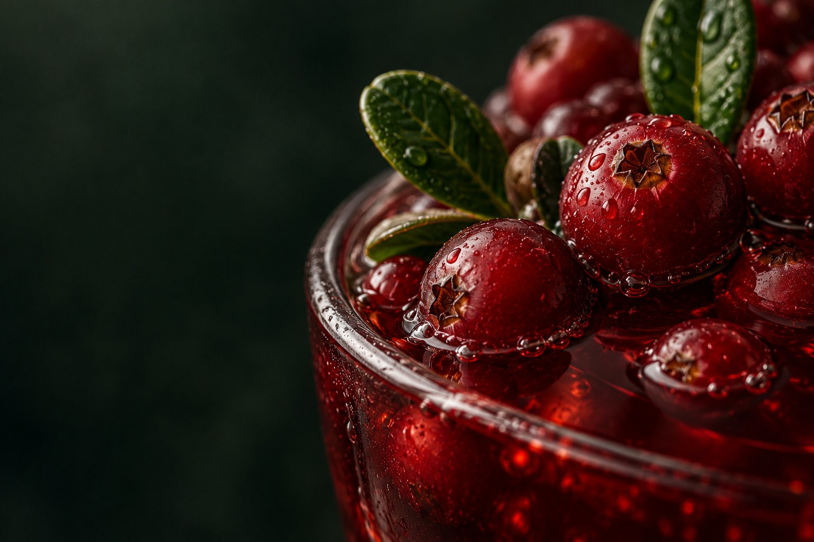
Маркетинговое исследование
Исследование дополнено ответами на вопросы после первой презентации: уточнено позиционирование линейки, расширена выборка отзывов и спроектирован поэтапный план работы по ассортименту магазина.
Новое отмечено в разделах зелёной меткой, изменённое — серой. Переключатель «Только новое» в содержании оставляет на странице только эти места.
Сформулирована главная связка карточки: эталонный вкус домашнего морса, подкреплённый профессиональной технологией и опытом бренда в ресторанах и кафе.
Определено, как перевести работу с заведениями из абстрактной регалии в конкретные доказательства качества и состава.
Разработаны текстовые приёмы, которые переводят сухой процент на этикетке в понятную меру.
Проанализирована динамика спроса по месяцам и необходимость сезонной адаптации контента.
Выделены рабочие механики лидера — понятная мера литров, снятие страхов о составе — и точки нашей отстройки.
Выборка расширена на все вкусы и форматы «Ягодной PRO·порции».
Уточнено, какие аргументы нужны в воронке для прагматичной аудитории.
Анализ того, насколько целесообразно создавать персонажа бренда в рамках маркетплейсов.
Концепция синхронизирована с новыми выводами исследования.
Разведены задачи фасовок, групп и вкусов, сформулированы выводы о том, как это влияет на контент.
Поэтапный план работ по визуалу всего ассортимента магазина с матрицей стоимости тиражирования.
Найти продуктовые и визуальные аргументы, которые выделят карточку в поисковой и рекомендательной выдаче Ozon — рост кликабельности обложки — и снимут барьеры перед первой покупкой — рост конверсии из просмотра в корзину.
Контекст проекта
Бизнес-контекст. Историческое ядро продаж бренда Profberry — рестораны, кафе и кейтеринг. Выход на маркетплейсы открывает канал прямых продаж конечным покупателям и малому бизнесу без посредников.
Продуктовая задача. Перевести технологические преимущества продукта — не менее 60% сока прямого отжима с мякотью, пакет с краном в коробке — с языка производственных спецификаций на язык бытовой выгоды покупателя и отстроиться от конкурентов.
Практический результат
Выводы исследования ложатся в основу архитектуры карточки, визуального кода обложек и дорожной карты обновления всего магазина на Ozon.
«Ягодная пропорция» — линейка пастеризованных концентратов для напитков на основе сока прямого отжима с мякотью.
В линейке морсов пять вкусов: клюква, чёрная смородина, облепиха, брусника и вишня.
Фокус исследования. Подробный анализ — на примере брусничного концентрата.
На 100 г концентрата
| Вкус | Энергетическая ценность | Углеводы | Из них сахара |
|---|---|---|---|
| Клюква | 170 ккал | 41 г | 39 г |
| Чёрная смородина | 170 ккал | 42 г | 38 г |
| Облепиха | 200 ккал | 41 г | 38 г |
| Брусника | 180 ккал | 44 г | 39 г |
| Вишня | 170 ккал | 41 г | 35 г |
Облепиховый концентрат также содержит 3 г жиров на 100 г.
Информация о продукте, покупателях, спросе и конкурентной среде.
Сайт производителя Profberry и карточки линейки на Ozon: описания и характеристики продукции.
Отзывы, вопросы и ответы продавцов по линейке «Ягодная пропорция» и конкурентам разных форматов.
Ozon, Wildberries и Яндекс Вордстат. Формулировки и частотность запросов о морсе, концентратах и ягодных основах.
Карточки, цены и показатели заказов. Прямые конкуренты и альтернативы: ягодные основы, сухой морс, замороженные ягоды и готовые напитки.
Контекст проекта
Особенности продукта, позиционирование и задачи развития продаж на маркетплейсе.
Срез воронки продаж концентрата брусничного морса 1,8 кг за 28 дней: в сравнении с медианой конкурентов, с лидером сегмента и с другими вкусами линейки.
Как читать сравнение
Медиана — серединное значение показателя среди карточек среза. Срез: 129 карточек прямых конкурентов — концентраты морса на Ozon с 200 и более посещениями за 28 дней.
| Этап воронки | Наша карточка | Медиана конкурентов | Разница |
|---|---|---|---|
| Показы | |||
| Показы всего | 20 202 | 13 757 | на 47% выше |
| Показы в поиске и каталоге | 4 420 | 2 707 | на 63% выше |
| Доля показов из поиска и каталога | 21,9% | 19,0% | на 15% выше |
| Переход в карточку | |||
| Посещения карточки | 689 | 1 021 | на 33% ниже |
| Показ → карточка | 3,4% | 7,2% | на 53% ниже |
| Корзина и заказ | |||
| Карточка → корзина | 6,82% | 7,43% | на уровне медианы |
| Корзина → заказ* | ≈62% | ≈37% | выше медианы |
| Заказано товаров | 37 шт. | 40 шт. | на уровне медианы |
| Заказано на сумму | 39 113 ₽ | 31 560 ₽ | на 24% выше |
| Показ → заказ | 0,18% | 0,24% | на 25% ниже |
| Выкуп | 100% | 96,0% | на уровне медианы |
| Реклама | |||
| ДРР | 4,4% | 2,4% | на 83% выше |
* Корзина → заказ — оценка: заказы, делённые на добавления в корзину из карточки и из поиска. Добавления из рекомендаций и избранного Ozon не показывает, поэтому значение приблизительное.
Длина полосы — доля от большего значения в строке.
Работает неэффективно
Работает хорошо
Что можно усилить
Лидер брусничного сегмента — Борковское поместье, морс брусника 1,3 кг: 931 заказ и 578 тыс. ₽ за 28 дней.
| Показатель | Наша карточка | Лидер | Разница |
|---|---|---|---|
| Трафик | |||
| Показы всего | 20 202 | 436 070 | в 21,6 раза меньше |
| Показы в поиске и каталоге | 4 420 | 36 367 | в 8,2 раза меньше |
| Посещения карточки | 689 | 20 099 | в 29 раз меньше |
| Конверсии | |||
| Показ → карточка | 3,4% | 4,6% | на 26% ниже |
| Карточка → корзина | 6,82% | 14,06% | в 2,1 раза ниже |
| Корзина → заказ* | ≈62% | ≈30% | в 2 раза выше |
| Результат | |||
| Заказано товаров | 37 шт. | 931 шт. | в 25 раз меньше |
| Заказано на сумму | 39 113 ₽ | 577 940 ₽ | в 14,8 раза меньше |
Длина полосы — доля от большего значения в строке.
| Запрос | Лидер | Наша брусника 1,8 кг | Кто в первых 30 |
|---|---|---|---|
| морссамый широкий запрос | 5 | нет в первых 144 | 14 концентратов, 13 готовых, 2 сухих |
| морс концентрат | 3 | 36 | 28 концентратов |
| концентрат морса | 3 | 20 | 28 концентратов |
| морс брусника | 1 | 33 | 19 концентратов, 6 готовых, 5 сухих |
| брусничный морс | 2 | 21 | 17 концентратов, 8 готовых, 5 сухих |
Срез выдачи Ozon на один день. Выдача персональная и меняется изо дня в день, поэтому важен порядок величин, а не точное место. По запросу «морс» линейка лидера занимает 4 из первых 8 мест: клюква — 2‑е, брусника — 5‑е, облепиха — 6‑е, чёрная смородина — 8‑е.
Чем выигрывает лидер
Главная разница — объём показов: у лидера их в 21,6 раза больше.
У лидера самые высокие продажи и самая высокая доля «в корзину» — у облепихи:
| Борковское поместье | Заказано на сумму | Заказы | Карточка → корзина | ДРР |
|---|---|---|---|---|
| Облепиха | 1,48 млн ₽ | 2 708 | 20,61% | 9,5% |
| Клюква | 1,02 млн ₽ | 1 629 | 16,79% | 5,5% |
| Брусника | 0,58 млн ₽ | 931 | 14,06% | 5,5% |
| Облепиха-имбирь | 0,40 млн ₽ | 736 | 14,74% | 5,6% |
В нашей линейке 1,8 кг входящий трафик тоже эффективнее всего обрабатывает облепиха: её чаще всех кладут в корзину, и без рекламы она даёт столько же заказов, сколько рекламируемая брусника.
| Вкус, 1,8 кг | Показы | Показ → карточка | Карточка → корзина | Показ → заказ | Заказы | Реклама, дней |
|---|---|---|---|---|---|---|
| Брусника | 20 202 | 3,4% | 6,82% | 0,18% | 37 | 27 из 28 |
| Облепиха | 5 449 | 8,1% | 11,96% | 0,66% | 36 | нет |
| Клюква | 4 864 | 8,9% | 10,34% | 0,62% | 30 | нет |
| Лимон | 3 817 | 8,9% | 9,73% | 0,84% | 32 | нет |
| Чёрная смородина | 2 796 | 10,5% | 7,84% | 0,68% | 19 | нет |
| Курага | 2 634 | 13,1% | 6,06% | 0,99% | 26 | нет |
Предположение
Высокие продажи облепихи и у лидера, и у нас, скорее всего, связаны с сезоном: осенью и зимой облепиху берут для горячих напитков и чая. Возможно, стоит учитывать сезонность и активнее продвигать сезонный вкус, а остальные продавать через склейку. Сезонность облепихи и брусники проверим в разделе поискового спроса.
Вывод раздела
Что делаем
Повышаем кликабельность обложки и прорабатываем воронку слайдов. Рост конверсий поднимет карточку в поиске и рекомендациях, а вместе с этим вырастут и показы.
Почему лидер впереди
Объём показов в 21,6 раза больше: шире линейка вкусов и выше конверсии, за которые площадка поднимает его в поиске и рекомендациях.
Что проверить
Облепиха лучше всех обрабатывает трафик и у нас, и у лидера. Связь с сезоном проверим в разделе поискового спроса.
Источники: Ozon, аналитика, 28 дней, 129 карточек прямых конкурентов с 200+ посещениями; выдача Ozon по пяти запросам, первые 144 позиции.
Как выглядит выдача Ozon по четырём запросам: какие форматы и визуальные коды видит покупатель, прежде чем выбрать, какую карточку открыть, и какие обложки кликают чаще.
Выборка
Первые 32 карточки выдачи Ozon по четырём маркерным запросам: форматы, визуальные коды и офферы на обложках, без учёта цены.
Из 32 карточек концентратов — 10, и семь из них — одна серия Борковского поместья. Первый экран, позиции 1–8, почти целиком занимают готовые напитки: Чудо-Ягода, Сады Придонья, Ozon fresh, детские Агуша и ФрутоНяня. Нашей карточки в первых 32 нет.
Из чего состоят первые 32 карточки
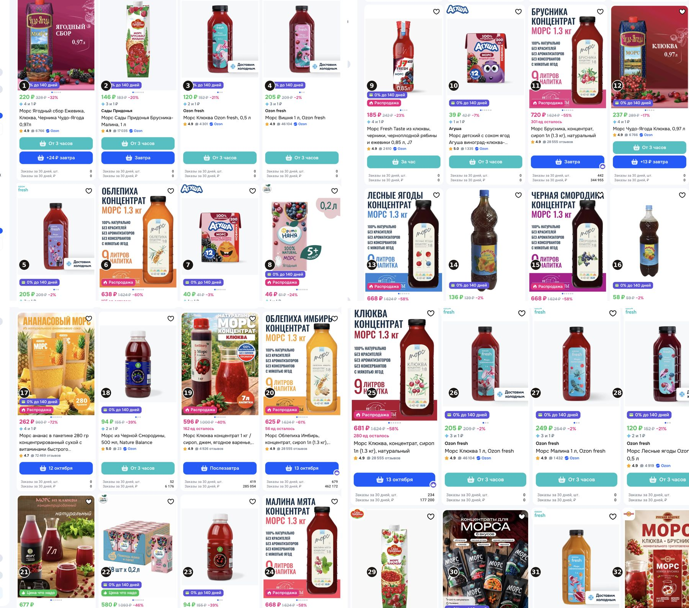
Что работает в этой выдаче
Вывод по запросу
По общему запросу покупатель ещё не решил, нужен ли ему концентрат. Обложка должна за секунду сказать, что это концентрат, и показать, что из него получится. Фото напитка здесь выделяет сильнее любого перечня.
Треть выдачи — одна серия Борковского поместья: 11 одинаковых шаблонов, которые отличаются только цветом нижней полосы. Наша карточка — на 23‑й позиции.
Из чего состоят первые 32 карточки
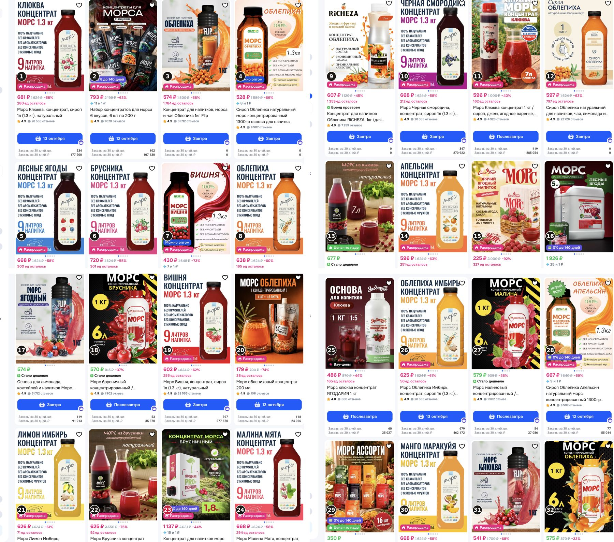
Что работает в этой выдаче
Вывод по запросу
Здесь выбирают между концентратами. Выделиться можно цветом и фото напитка.
«Стены» здесь нет: Борковского всего три карточки, ни одна серия не доминирует. Главный код запроса — фото готового морса. Наша карточка — на 25‑й позиции.
Из чего состоят первые 32 карточки
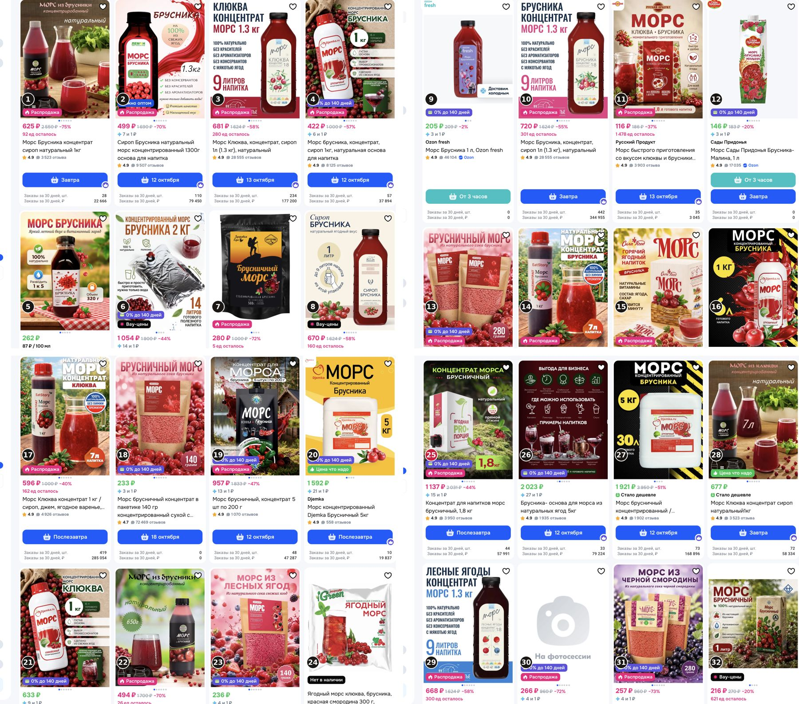
Что работает в этой выдаче
Вывод по запросу
По брусничному запросу покупатель ищет конкретный напиток и ждёт его увидеть. Обложка без морса в кадре проигрывает соседям, которые показывают результат.
Восемнадцать из 32 — одна серия FLIP. Морсовых вкусов и брусники в выдаче нет. Нашей карточки в первых 32 нет.
Из чего состоят первые 32 карточки
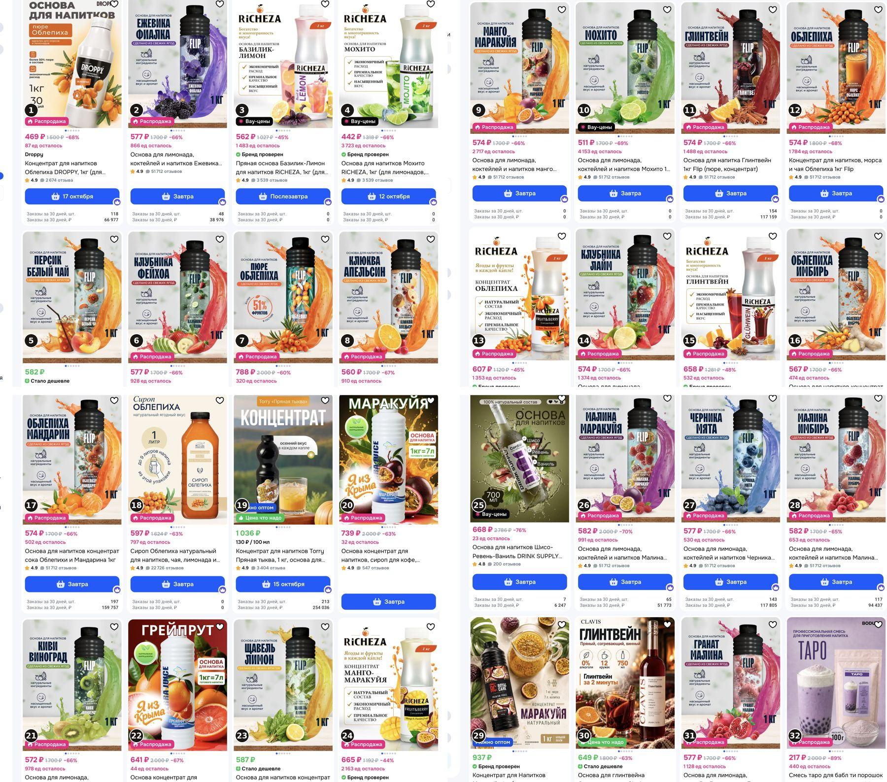
Что работает в этой выдаче
Вывод по запросу
Этот запрос не про морс: брусничного спроса здесь нет. Подстраивать обложку под коды FLIP не стоит.
Переход из показа в карточку — единственный показатель, который зависит почти только от обложки. Но сравнивать его напрямую между карточками нельзя: чем шире товар показывают — в рекомендациях и рекламе, тем ниже доля переходов, потому что его видят и те, кто его не искал. По 129 карточкам прямых конкурентов связь с числом показов — −0,5. Это видно внутри каждой серии: одна и та же обложка кликает в несколько раз хуже у товара, который показывают шире.
Переход из показа в карточку у товаров одной серии: с малым и с большим числом показов.
Что это значит для нашей карточки
Наша обложка чёрной смородины 1,8 кг, сделанная по тому же шаблону, получает 10,5% переходов — выше медианы. Брусника с той же обложкой — 3,4%, но её показывают в семь раз шире. Шаблон не провальный: он работает там, где покупатель уже ищет морс, и проигрывает там, где обложке нужно объяснить себя без запроса, — в рекомендациях и рекламе.
Поэтому обложки ниже сравниваются только при похожем охвате — от 5 до 16 тысяч показов за 28 дней.
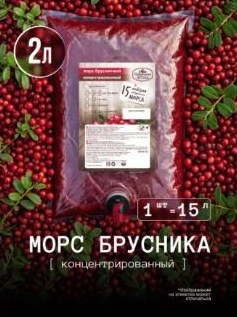
16,4%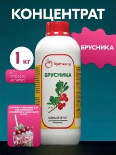
16,5%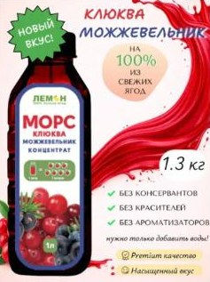
20,2%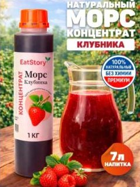
26,9%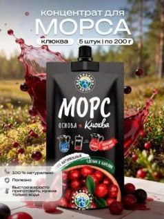
11,9%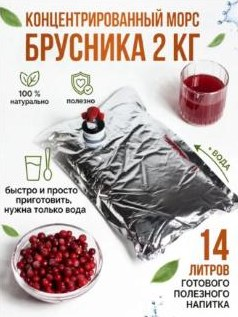
11,5%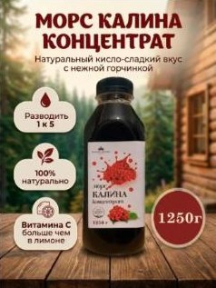
10,9%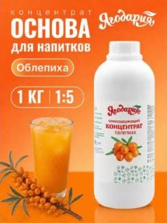
10,7%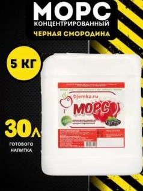
3,7%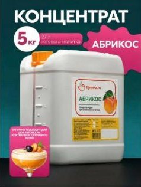
3,5%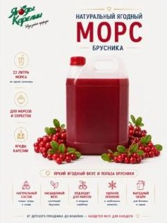
3,3%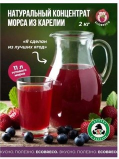
2,1–4,4%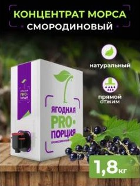
10,5%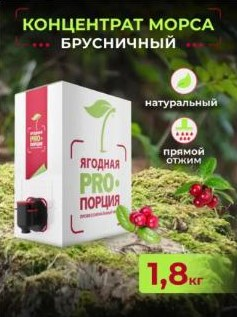
3,4%У кликабельных обложек главный объект — сама упаковка, крупно и целиком: бутылка (Djemka, ЛЕМОН, EatStory, Богатства Саян, Ягодария), пакет с краном (САВА, Zagotprom), дой-пак (Карельское лето). С миниатюры понятно, что именно покупаешь и что это формат для дома. Напиток в кадре есть только у части из них — кувшин у EatStory, стакан у Ягодарии, всплеск у ЛЕМОНА и Карельского лета, — и он же есть у слабой серии ECOBRECO: сам по себе напиток клик не решает. У слабых главный объект — канистра на 5 кг, которая сразу читается как товар для кафе.
Литры напитка крупно стоят у половины кликабельных обложек — «1 шт = 15 л», «14 литров», «7 л», «6 л», — но у ЛЕМОНА и Богатств Саян крупно написан вес. И у слабых литры тоже есть: «30 л» у Djemka 5 кг, «11 л» у ECOBRECO. Мера напитка помогает сравнить упаковку с соседями, но сама по себе обложку кликабельной не делает.
«Морс брусника», «Морс калина концентрат», «Концентрат» и вкус огромным шрифтом. У ECOBRECO вкус на обложке не назван — и вся серия кликает слабо при любом охвате.
САВА (2 л) и Zagotprom (2 кг) продают пакет с краном и кликают хорошо: САВА показывает пакет крупно на фоне брусники и пишет «1 шт = 15 л», Zagotprom — сам пакет, стакан и стрелку «+ вода». Пакет с краном покупателя не отпугивает, если обложка понятно его показывает.
Мера напитка крупно стоит на большинстве обложек концентратов. Она позволяет покупателю сравнить упаковку с соседями и привычнее для морса, чем вес. Но литры есть почти у всех, поэтому это входной билет, а не отличие: без них карточку сложнее сравнить, выделиться ими не получится.
Борковское в «морс концентрат» и FLIP в «основе для напитков» повторяют один шаблон 11 и 18 раз. Глаз перестаёт различать одинаковые обложки — заметным становится всё, что на них не похоже.
Фото морса в кувшине или графине на деревянном столе — самый частый образ брусничной выдачи.
В «морс концентрат» тёмных обложек 10 из 32, не считая нашей: чёрно-жёлтые, бордовые, чёрные. Нас отличает не темнота, а цвет: тёмно-зелёная лесная гамма почти одна во всех запросах.
Пакет с краном в выдаче встречается редко, и ближайшие конкуренты продают его без коробки, объясняя процессом: пакет, стакан морса, «+ вода». Наш формат другой — пакет с краном в коробке: она встаёт на полку и в дверцу холодильника, морс наливается одной рукой и легко дозируется. Это очень удобно, но обложка этого не раскрывает: кран в кадре есть, но он мелкий и ничего не объясняет, как наливается морс — не показано. Раскрытый формат может стать отстройкой — такого в выдаче больше ни у кого нет.
Наша карточка в выдаче
Сильное: тёмно-зелёная лесная гамма — почти единственная во всех запросах, а коробка с краном — редкий формат.
Слабое: напитка в кадре нет, крупное число — вес «1,8 кг», а не мера напитка; значки «натуральный» и «прямой отжим» на миниатюре не читаются; кран мелкий, а то, как удобно наливается морс, не показано.
Источники: выдача Ozon по четырём запросам, первые 32 карточки; Ozon, аналитика, 28 дней, 129 карточек прямых конкурентов с 200 и более посещениями.
Последовательный разбор визуала и смыслов карточек конкурентов — от самых продаваемых к менее продаваемым.
Выборка
18 карточек конкурентов с продажами от 29 тыс. ₽ за 28 дней — по убыванию суммы заказов — и наша карточка первой для сравнения. Метки «высоко», «около середины», «низко» — относительно 129 прямых конкурентов.
Концентрат морсажидкий концентрат для морса — прямые конкуренты
Основа для напитковсиропы и пюре для лимонадов, чая и коктейлей
Сухой морспорошок или гранулы, разводятся водой
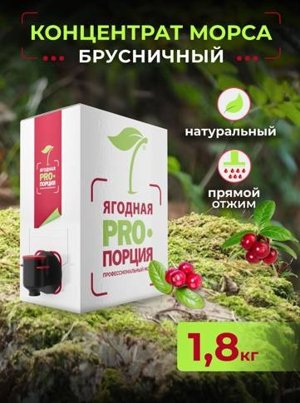
Что считывается первым
Взгляд попадает на два самых ярких пятна — кислотно-зелёный заголовок вверху и плашку «1,8 кг» внизу. Оба стоят по краям кадра, а не на товаре. Коробку не выделяют ни свет, ни масштаб: она занимает около трети площади и стоит в общей тени. Внимание проходит мимо продукта.
Что сообщает визуал
Лес, мох и белая коробка с кислотными надписями не складываются в понятное сообщение. Это не код еды — напитка, вкуса и аппетита в кадре нет, — но и не ясный образ бренда: природа фоном, упаковка отдельно, текст поверх. За секунду покупатель не понимает ни что это, ни зачем ему это.
Главная ошибка
Обложка не вызывает желания выпить этот морс. В продуктах питания решение начинается с ощущения: сначала покупатель должен захотеть — увидеть глубокий ягодный цвет, сочность, холодный стакан, — а дальше он сам найдёт доводы, почему это нужно купить. Сейчас обложка показывает упаковку, а не удовольствие от напитка.
Вывод по обложке
Направленность на отстройку есть: тёмная лесная гамма выделяет карточку среди красно-белых обложек, а коробка с краном — редкий формат. Но реализация слабая. Атмосфера не релевантна продукту питания и не вызывает аппетита; офферы слабые — «натуральный» есть у всех, «прямой отжим» без расшифровки непонятен; вес «1,8 кг» не позволяет сравнить с конкурентами и понять, сколько напитка выйдет; сам товар мелкий и сливается с фоном, а упаковка и её удобство не раскрыты.
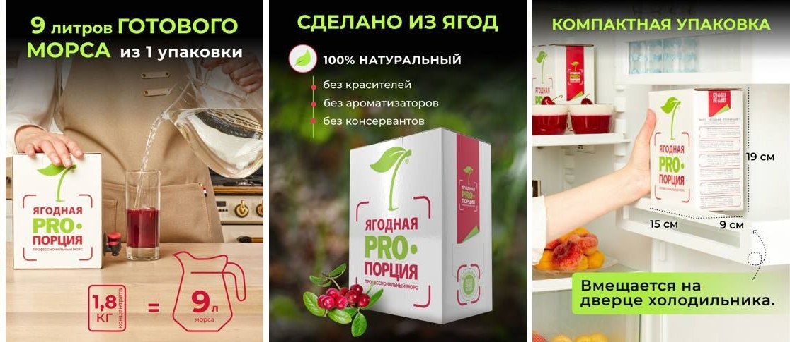
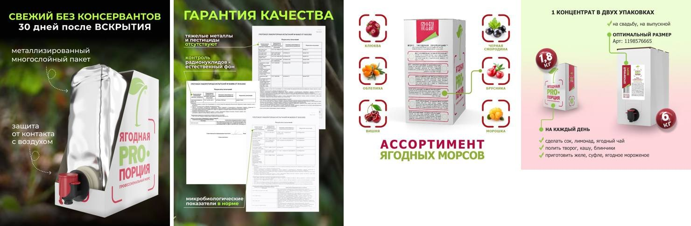
Внимание
сл. 1тёмный фон и кислотные акцентыИнтерес
сл. 2–39 литров морса, «сделано из ягод»Желание
нетпусто: вкус и удовольствие от напитка не показаныДоверие
сл. 4–8компактность, 30 дней, протоколы, ассортиментЛогика воронки
Воронка выстроена в обратном порядке: она объясняет и доказывает — размеры коробки, металлизированный пакет, радионуклиды, — но ни разу не создаёт желания. Вкус, цвет и удовольствие от морса не показаны. Без желания доказательства не работают: покупателю не в чем себя убеждать.
Исполнение
Единственный кадр с человеком и напитком — схема «1,8 кг = 9 л», где морс показан как иллюстрация расчёта, а не как удовольствие. Сильнейшие отличия поданы языком технической документации, протоколы — сканами, которые не прочитать. Два последних слайда из другой стилистики разрушают ощущение цельного бренда.
Смыслы и офферы
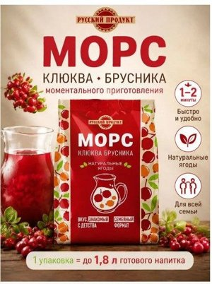
Что считывается первым
Огромное красное «МОРС» на всю ширину — слово-вывеска, которое читается раньше всего остального. Затем красная пачка в центре. Кувшин морса слева частично перекрыт пачкой и воспринимается фоном.
Что сообщает визуал
Тёплый бежевый, бордовый и корзина ягод внизу — код «домашнее, как в детстве», привычный и безопасный. Круглые значки и плашка «до 1,8 л» — инфографика массового рынка. Обложка обещает простоту: быстро, для семьи, много напитка.
Сильный ход
Продукт назван одним словом. В выдаче, где соседи пишут «основа», «концентрат», «сироп», единственное крупное «МОРС» сразу отвечает тому, кто ищет морс.
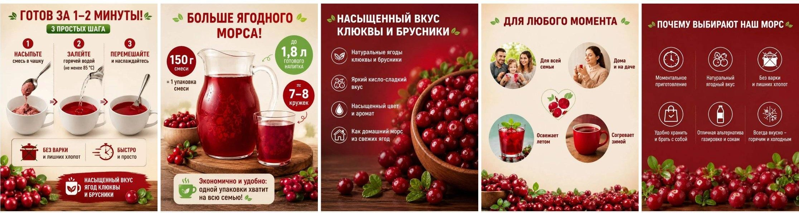
Внимание
сл. 1вывеска «МОРС» и кувшинИнтерес
сл. 2–3три шага приготовления и сколько выйдетЖелание
сл. 4–5насыщенный вкус, «для любого момента»: семья, дача, лето и зимаДоверие
сл. 6«почему выбирают наш морс» — шесть доводовЛогика воронки
Каждый слайд закрывает один вопрос: как приготовить, сколько выйдет, какой вкус, когда пить. Но воронка короткая и неглубокая: после четвёртого слайда остаются общие слова — «насыщенный вкус», «почему выбирают» — и значки. Натуральность заявлена и ничем не подтверждена.
Исполнение
Единый шаблон держит воронку цельной, но бордюр из ягод на каждом слайде превращается в штамп. Кадры выглядят сгенерированными, без характера бренда: воронка работает за счёт понятности продукта, а не качества подачи.
Смыслы и офферы
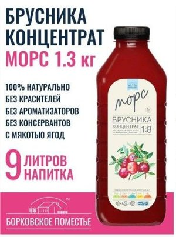
Что считывается первым
Иерархия выстроена правильно: вкус и «концентрат морс» сверху слева, затем «9 литров напитка» — самая крупная цифра, бутылка справа и логотип в цветной полосе. Глаз проходит по кадру зигзагом, как по странице, и за секунду собирает ответ: что это, какой вкус, сколько выйдет.
Что сообщает визуал
Узкий жирный шрифт и белый фон — код понятного массового продукта без претензии. Столбик «100% натурально, без красителей…» никто не читает, но его плотность работает как знак «чистого состава». Обложка не обещает удовольствия — она снимает риск.
Сильный ход
Серия. Один шаблон на 18 вкусах меняет только цвет полосы. В выдаче шесть одинаковых карточек подряд работают как доказательство масштаба: «это берут все». Отдельная обложка слабая, а серия — сильная.
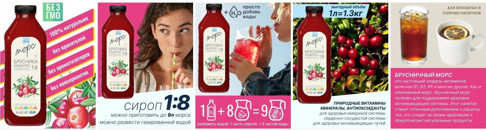
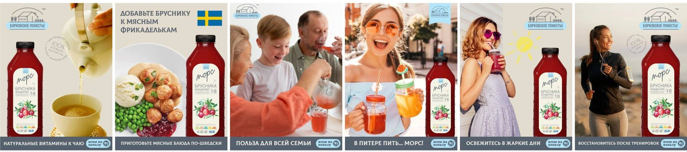
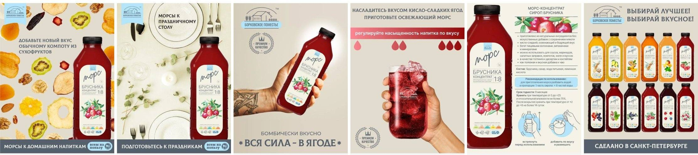
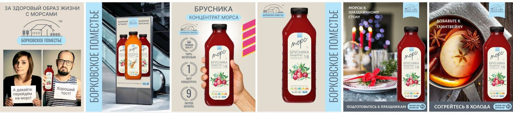
Внимание
сл. 1крупные литры и серия-«стена»Интерес
сл. 2–6«без ГМО», формула 1 + 8 = 9, витаминыЖелание
сл. 7–21люди пьют морс: лето, спорт, семья, праздник, глинтвейнДоверие
сл. 22–24медальки «премиум», «сделано в Санкт-Петербурге», линейкаЛогика воронки
Сильная сторона — разнообразие сценариев: чай, еда, семья, спорт, праздник, глинтвейн; покупатель находит свой повод. Слабая — после шестого слайда воронка перестаёт развиваться: восемнадцать кадров подряд повторяют одну мысль «пейте морс в любой ситуации» с одинаковой подписью внизу, и к середине внимание гаснет.
Исполнение
Розово-белая графика первых слайдов и серо-бежевые стоковые фото дальше выглядят как две разные карточки. Натуральность и «премиальное качество» подтверждены только медалями собственного дизайна.
Смыслы и офферы
Брусника — разобранный вкус
Облепиха в той же карточке: 1,29 млн ₽, показ → карточка 3,0%, карточка → корзина 15,25%. Слайды брусники стоят первыми.
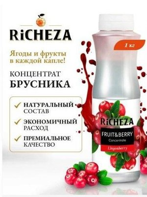
Что считывается первым
Название вкуса засечным шрифтом — самый тёмный и крупный элемент на белом. Бутылка белая на белом фоне и почти теряет контур; единственное цветовое пятно — ягоды и брызги в нижнем углу.
Что сообщает визуал
Засечный шрифт, курсивный слоган и рамка с галочками претендуют на премиальность, но белая предметка без напитка читается как каталог поставщика: обложка сообщает «сырьё», а не «вкус».
Главная ошибка
Три обещания в рамке — «натуральный состав, экономичный расход, премиальное качество» — общие слова, которые есть у всех. Конкретного повода выбрать именно эту бутылку нет.
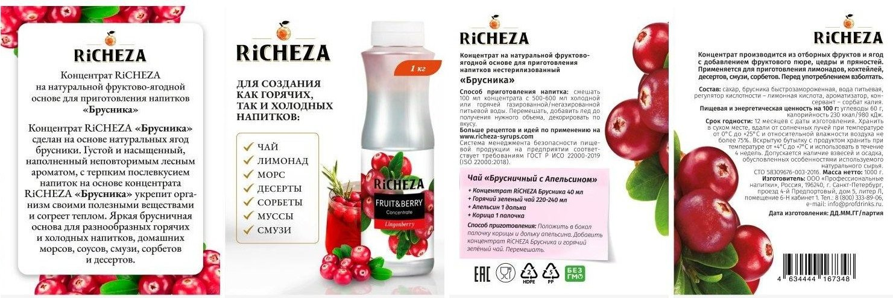
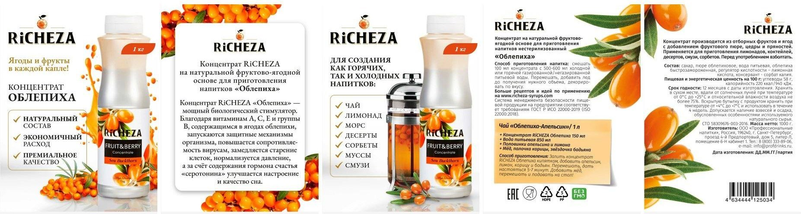
Внимание
сл. 1название вкуса, белая предметкаИнтерес
сл. 2абзац описанияЖелание
сл. 3список применений галочками — без картинки напиткаДоверие
сл. 4–5этикетка мелким текстом, ГОСТЛогика воронки
Пять слайдов брусники: описание абзацем, список применений, этикетка, оборот этикетки. Воронка сообщает информацию, но не создаёт желания: горячий чай заявлен и нигде не показан. Облепиха с теми же слайдами продаёт в девять раз больше — воронка не продаёт, продаёт вкус.
Исполнение
Половина слайдов — сфотографированная этикетка с мелким текстом, который на телефоне не прочитать. Стиль аккуратный и единый, но каталожный.
Смыслы и офферы
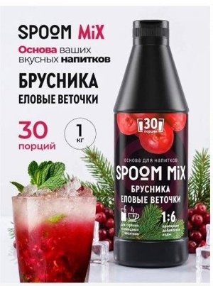
Что считывается первым
Бокал брусничного напитка со льдом и хвоей — самый насыщенный по цвету элемент; рядом чёрная бутылка, которая перетягивает визуальный вес. Название вкуса — жирным шрифтом сверху.
Что сообщает визуал
Ель, брусника и бокал со льдом и мятой задают праздничный зимний повод. Но в кадре коктейль, а не морс: обложка обещает праздничный напиток, а не привычный ягодный морс.
Сильный ход
Вкус как повод. «Брусника, еловые веточки» сама по себе рисует картинку зимнего праздника и выделяет карточку среди «просто брусники».
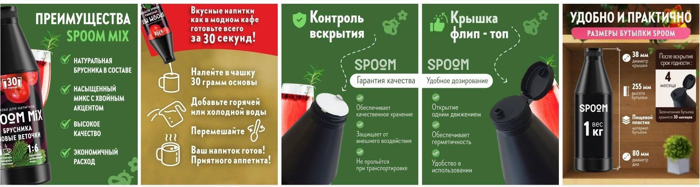
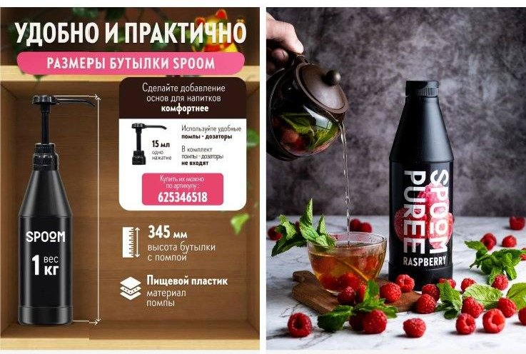
Внимание
сл. 1бокал и хвояИнтерес
сл. 2–3преимущества, «как в кафе за 30 секунд»Желание
нетпосле обложки вкус не раскрытДоверие
сл. 4–8контроль вскрытия, флип-топ, размеры, помпаЛогика воронки
Обещание праздничного вкуса не развивается: со второго слайда — преимущества галочками, «как в кафе за 30 секунд», а дальше три слайда про контроль вскрытия, крышку и помпу. Вкус брусники с хвоей больше не появляется.
Исполнение
После светлой обложки воронка переходит в тёмно-зелёный шаблон линейки, последний слайд — от малинового пюре. Шаблон общий на 60 вкусов, поэтому о своём вкусе карточка почти ничего не говорит.
Смыслы и офферы
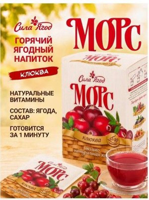
Что считывается первым
Огромное красное «МОРС» с декоративной буквой, затем пачка и чашка горячего морса. Элементы близки по весу — глаз мечется между заголовком, пачкой с тем же словом, чашкой, корзиной и текстом слева.
Что сообщает визуал
Тёплый солнечный свет, плетёная корзина, бежевые тона — код домашнего и натурального. «Горячий ягодный напиток» и «состав: ягода, сахар» на обложке — сразу и сценарий, и доказательство. Обложка обещает ритуал: горячая чашка вместо чая.
Сильный ход
Короткий состав прямо на обложке. В категории, где почти все пишут «натуральный», «ягода, сахар» — конкретный факт, который нельзя оспорить.
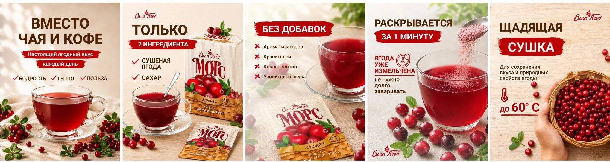
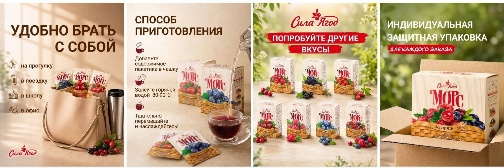
Внимание
сл. 1вывеска «МОРС» и горячая чашкаИнтерес
сл. 2–4вместо чая и кофе, 2 ингредиента, без добавокЖелание
сл. 5–7за 1 минуту, щадящая сушка, «взять с собой»Доверие
сл. 8–10способ, линейка, защитная упаковкаЛогика воронки
Десять слайдов вокруг одной мысли — горячий морс вместо чая и кофе: польза, два ингредиента, без добавок, за минуту, щадящая сушка, с собой. Логика цельная, но однообразная: одна и та же чашка повторяется на большинстве кадров, и к середине воронки новых впечатлений нет.
Исполнение
Единая тёплая стилистика выдержана от первого до последнего слайда — это сильнейшая сторона. Слабые — перегруженная обложка и повторяющиеся кадры.
Смыслы и офферы
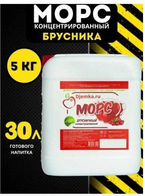
Что считывается первым
Чёрно-жёлтые «предупреждающие» полосы видны раньше, чем продукт. Затем белое «МОРС», жёлтые «5 кг» и «30 л».
Что сообщает визуал
Полосы «осторожно», чёрный фон и канистра — код склада, стройки, бытовой химии. Для покупателя-бизнеса это сигнал «большой объём, промышленный продукт», для домашнего — «это не еда».
Сильный ход
Жёсткая отсечка. Обложка сознательно отталкивает домашнего покупателя и точно говорит с оптовым: объём и выход крупно.
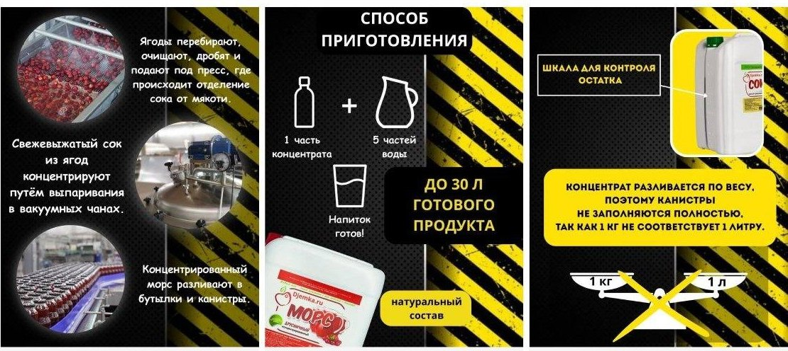
Внимание
сл. 1полосы и цифры объёмаИнтерес
сл. 2производство в круглых фотоЖелание
нетнет ни напитка, ни ягодДоверие
сл. 3–4способ 1 + 5, шкала остаткаЛогика воронки
Четыре слайда: объём, производство, разведение, расход. Воронка рациональна до конца — вкуса, напитка и сценария нет вообще.
Исполнение
Единый промышленный стиль. Производство в круглых фото — пресс, чаны, розлив — работает как доказательство натуральности лучше слов.
Смыслы и офферы
Обложка — актуальная с Ozon. Слайды ниже собраны с варианта карточки в кремовой обложке «Сироп клюква».
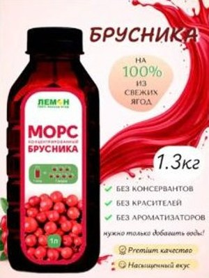
Что считывается первым
Красная бутылка с крупными ягодами на этикетке, справа — малиновая волна. Затем круг «на 100% из свежих ягод» и «1,3 кг». Столбик галочек и две плашки внизу почти не читаются.
Что сообщает визуал
Волна сока и глянцевая бутылка — код сиропов и соков массового рынка. Плашки «premium качество» и «насыщенный вкус» с иконками — приём маркетплейсовой инфографики, который скорее удешевляет.
Главная ошибка
Перегруз. Сильный тезис «на 100% из свежих ягод» теряется среди волны, галочек и плашек.
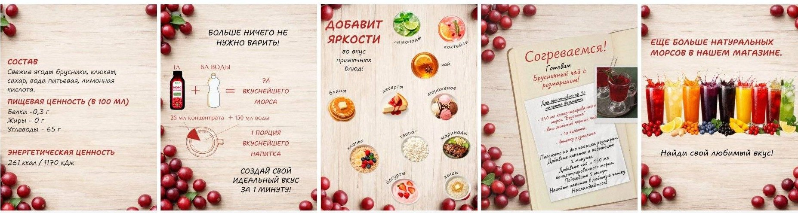
Внимание
сл. 1бутылка, волна, «100% из ягод»Интерес
сл. 2–3состав, «больше ничего не нужно варить»Желание
сл. 4–5фото блюд, рецепт брусничного чая в блокнотеДоверие
нетнет: только словаЛогика воронки
В собранных слайдах — домашний язык кухни: «больше ничего не нужно варить», формула разведения, фото блюд, рецепт в блокноте. Это снимает страх «сложно», но со своей обложкой не связано: слайды взяты от варианта «клюква».
Исполнение
Светлое дерево, рукописные шрифты, клюква по краям — тёплый, но устаревший кухонный стиль. Состав — сплошным текстом.
Смыслы и офферы
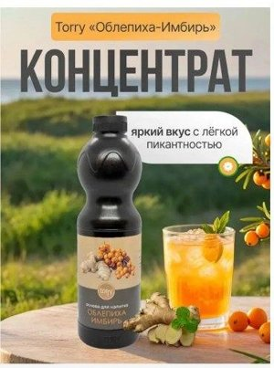
Что считывается первым
Огромное серое слово «КОНЦЕНТРАТ» на фоне пейзажа. Тёмная бутылка сливается с травой, вкус «облепиха-имбирь» набран мелко на плашке.
Что сообщает визуал
Сгенерированный луг у моря и стакан со льдом — летний лимонадный код. Продукт в кадре вторичен по отношению к пейзажу.
Главная ошибка
Главное слово обложки называет категорию, а не продукт. Покупатель тратит время, чтобы понять вкус, а именно вкус здесь и продаёт.
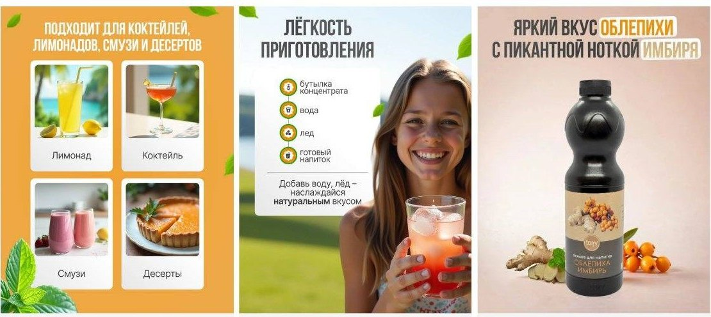
Внимание
сл. 1пейзаж и «КОНЦЕНТРАТ»Интерес
сл. 2применения в фото-карточкахЖелание
сл. 3девушка со стаканомДоверие
нетнетЛогика воронки
Четыре слайда: применения, девушка со стаканом, шаги, вкус. Нет объёма, состава, выхода. Горячего сценария нет, хотя облепиха с имбирём — вкус для чая.
Исполнение
Единый летний сгенерированный стиль, в котором продукт вторичен.
Смыслы и офферы
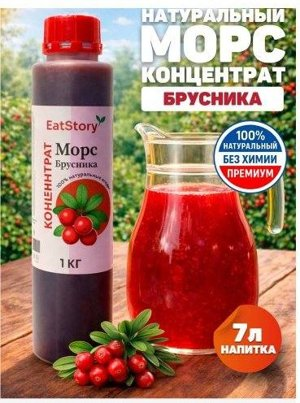
Что считывается первым
Кувшин ярко-красного морса — самое насыщенное пятно, почти треть кадра. Затем крупные белые «натуральный морс концентрат» и оранжевый круг «7 л».
Что сообщает визуал
Деревянный стол, зелень и ягодные кусты — код дачи, лета, натурального. Красный напиток на зелёном — максимальный цветовой контраст, который работает на аппетит. Штамп «100% натуральный, без химии, премиум» — общие слова.
Сильный ход
Результат вместо упаковки. Покупатель видит не бутылку, а кувшин морса, который получит; бутылка в кадре вторична.
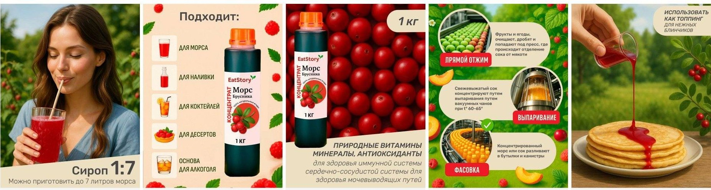
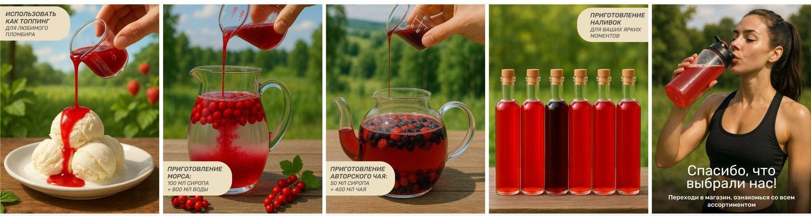
Внимание
сл. 1кувшин морса в садуИнтерес
сл. 2–3девушка пьёт, «сироп 1:7», примененияЖелание
сл. 6–10процесс: льётся на блины и мороженое, морс в кувшине, чайДоверие
сл. 4–5витамины, прямой отжим, производствоЛогика воронки
Почти каждый слайд показывает процесс: льют сироп, наливают, пьют, поливают блины и мороженое. Применение объясняется действием, а не текстом, поэтому воронка читается быстро. Слабое звено — доказательства: производство показано стоковыми фото завода.
Исполнение
Единый «летний сад» на всех одиннадцати слайдах — цельно. Но кадры сгенерированы и однотипны: своей фактуры нет, их легко спутать с соседями.
Смыслы и офферы
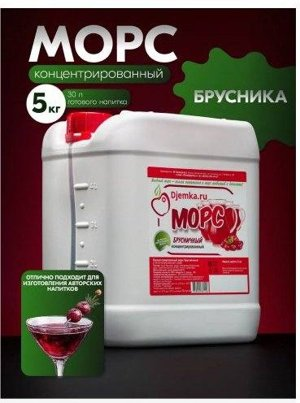
Что считывается первым
Белая канистра на тёмно-бордовом фоне, затем круг «5 кг, 30 л» и бокал коктейля в рамке внизу.
Что сообщает визуал
Тёмный бордовый фон, зелёные плашки и коктейль уводят канистру от складского образа: она выглядит как продукт для бизнеса, а не для склада.
Сильный ход
Тёмная подача делает оптовую канистру аккуратнее и дороже на вид. Обратная сторона — брусники почти не видно.
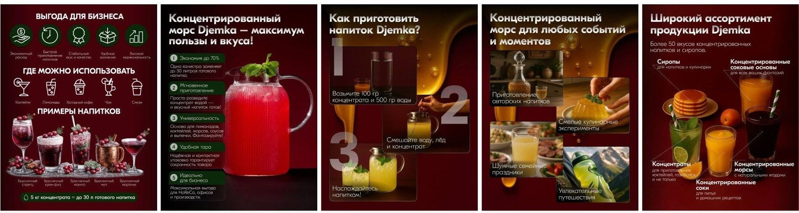
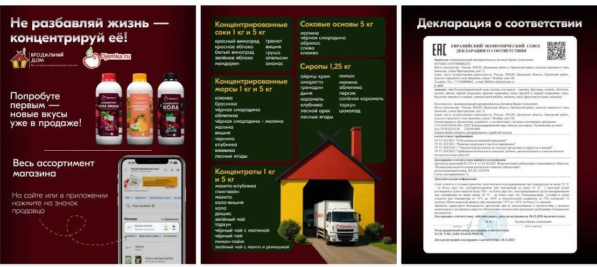
Внимание
сл. 1канистра и коктейльИнтерес
сл. 2–3выгода для бизнеса, пять преимуществЖелание
сл. 4–5коктейли, события — но половина фото оранжевые лимонадыДоверие
сл. 9декларацияЛогика воронки
Выгода для бизнеса, пять преимуществ, способ, события и три слайда магазина: ассортимент, приложение, список вкусов. Воронка говорит с бизнесом, а половина фото — оранжевые лимонады, не брусника.
Исполнение
Единый тёмный шаблон линейки — цельно, но универсально: та же воронка стоит у других вкусов и объёмов.
Смыслы и офферы
Что считывается первым
Чёрная бутылка с огромной вертикальной надписью читается как логотип. Затем высокий бокал напитка и красная плашка «содержит более 50% ягод».
Что сообщает визуал
Коралловый фон и рубленый шрифт — яркий, но обезличенный шаблон линейки. Цвет считывается как малина, а не брусника.
Сильный ход
Конкретная заявка «более 50% ягод» — единственная в категории попытка назвать долю ягоды.
Внимание
сл. 1цвет и бутылка-логотипИнтерес
сл. 3преимущества — уже малиновыеЖелание
сл. 4–5применения и 4 шага — малинаДоверие
сл. 6–9вскрытие, крышка, размерыЛогика воронки
Со второго слайда — малиновая карточка: преимущества, применения, шаги, упаковка. Покупатель брусники ни разу не видит свой продукт, и сильная заявка обложки ничем не подтверждена.
Исполнение
Ярко-розовый шаблон чужого вкуса. Пример того, как одна чужая картинка на втором слайде обнуляет доверие.
Смыслы и офферы
Что считывается первым
«БРУСНИЧНЫЙ МОРС» крупно сверху, два крафтовых пакета с окном, через которое видны розовые гранулы.
Что сообщает визуал
Крафт, окно и розовый размытый фон с брызгами — код «эко» сухих смесей, ничем не отличающийся от десятков соседей.
Главная ошибка
Обложка не выделяется: шаблон сухих смесей не даёт причины выбрать именно этот пакет.
Внимание
сл. 1название и пакетыИнтерес
сл. 2–3гранулы, преимущества, способЖелание
сл. 4–8три стакана разной насыщенности, «с собой», мама с дочкойДоверие
нет«сделано на Алтае» мелкоЛогика воронки
Сильнейший приём разбора — регулировка вкуса показана наглядно: три стакана разной насыщенности. Дальше — «для тех, кто не любит ждать», с собой в поход и на работу, мама с дочкой на кухне. Воронка снимает страх «будет приторно» и показывает гибкость продукта.
Исполнение
Единый розовый стиль, но сцены сгенерированы и выглядят искусственно.
Смыслы и офферы
Что считывается первым
Синяя кнопка «Бонусы за покупку» — самый контрастный элемент, и он не про продукт. Затем звезда «1,05 кг» и бутылка; вкус «клюква, брусника, можжевельник» набран узким шрифтом через точки.
Что сообщает визуал
Хвоя и ягоды по краю — зимний таёжный код. Кнопка бонусов и звезда — код распродажи, который спорит с атмосферой.
Главная ошибка
Визуальный вес отдан бонусам вместо вкуса. Самое интересное — сочетание клюквы, брусники и можжевельника — читается последним.
Внимание
сл. 1бонусы и звездаИнтерес
сл. 2–4описание, применения, приготовление — текстомЖелание
сл. 5–8рецепты: таёжный чай, холодный морс, мусс, горячий напитокДоверие
сл. 9«почему покупают у нас»Логика воронки
Первые четыре слайда — текст: описание, особенности, применения, приготовление. Сильнейшие кадры — в конце: рецепты таёжного чая и горячего напитка с паром над кружкой, ингредиентами и выходом. До них многие не долистают.
Исполнение
Рецепты в стиле журнальной карточки — лучшее в воронке. Начало и конец выглядят как разные карточки.
Смыслы и офферы
Что считывается первым
Графин и стаканы морса на деревянном столе; бутылка слева сливается с напитком. Курсив «натуральный» и формула «1 кг = 7 л» в углу почти не видны.
Что сообщает визуал
Тёплый свет, зелень и дерево — домашняя сцена застолья. Обложка выглядит как готовый морс, а не как концентрат.
Главная ошибка
Непонятно, что это концентрат: фото вызывает аппетит, но не объясняет продукт.
Внимание
сл. 1фотосцена с графиномИнтерес
сл. 2«быстро, натурально»Желание
сл. 4, 6крупный стакан, согревающие напиткиДоверие
сл. 3состав мелом на доскеЛогика воронки
Сильное начало — крупный стакан морса, «быстро, натурально», состав мелом на доске, согревающие напитки. Затем пять слайдов ассортимента подряд: воронка обрывается каталогом.
Исполнение
Тёплая фотографичная часть и холодная каталожная — два разных уровня исполнения в одной карточке.
Смыслы и офферы
Что считывается первым
Белая бутылка с красной крышкой на россыпи брусники, вид сверху; «БРУСНИКА» крупно. Мелкие плашки и рамка с коктейлем сливаются.
Что сообщает визуал
Россыпь ягод и мешковина — домашний натуральный код, который обещает дом и ягоду.
Главная ошибка
Разрыв обещания: обложка домашняя, а воронка — от другого продукта.
Внимание
сл. 1бутылка на ягодахИнтерес
сл. 2–3выгода для бизнесаЖелание
сл. 4–5лимонады и событияДоверие
сл. 9декларацияЛогика воронки
Со второго слайда — тёмный бизнес-шаблон от канистры 5 кг: «выгода для бизнеса», «5 кг = 30 л», оранжевые лимонады, приложение. Покупатель, пришедший за бутылкой для дома, видит товар для бизнеса.
Исполнение
Две несовместимые стилистики. Скан декларации даёт формальное доверие.
Смыслы и офферы
Что считывается первым
Тёмно-бордовое название и чёрная бутылка в центре — ось симметричной композиции. Слева бокал со льдом, вокруг пиалы ягод, хвоя и шишки.
Что сообщает визуал
Белый мрамор, фуд-стилистика и тонкие иконки — код дорогого журнала о еде. Выглядит премиальнее соседей.
Сильный ход
Эстетика. Обложка выделяется качеством исполнения, а не громкостью.
Внимание
сл. 1фуд-съёмкаИнтерес
сл. 2–3растворимость, напиток за минутуЖелание
сл. 4–5выпечка, завтрак с йогуртомДоверие
нетнетЛогика воронки
Продукт всё время в действии — льётся в графин, на йогурт, в выпечку, в завтрак. Но вместо одного главного сценария — «пять в одном»: морс теряется среди применений, доказательств нет.
Исполнение
Единая журнальная эстетика от первого до последнего слайда — лучшая визуальная система в разборе.
Смыслы и офферы
Что считывается первым
Всплеск морса и тёмный дой-пак с рукописным «МОРС» на фоне лесного озера и дома.
Что сообщает визуал
Северный пейзаж — код происхождения, а не просто природы: «ягода из Карелии».
Сильный ход
Происхождение вместо слова «натуральный». Место в кадре убеждает сильнее любых значков. Ближе всех к нашему лесному образу.
Внимание
сл. 1Карелия и всплескИнтерес
сл. 2–3только ягоды и сахар, способ, топпингЖелание
сл. 5девушка пьёт из стаканаДоверие
сл. 6текстура концентрата крупноЛогика воронки
Короткая воронка: только ягоды и сахар, способ и топпинг, пять пакетов, девушка с кувшином, текстура концентрата крупно. Нет горячего сценария и меры выхода крупно.
Исполнение
Единый тёмный стиль на дереве и в лесу, но пейзаж обложки выглядит сгенерированным, а мелкий текст поверх фото сливается.
Смыслы и офферы
Что считывается первым
Белая бутылка с огромной буквой «С», сиреневая плашка «бонусы», красные плашки преимуществ.
Что сообщает визуал
Белая бутылка и красные плашки — рациональный код «экономично и проверено». Ягоды похожи на клюкву, а не на бруснику.
Главная ошибка
Обложка не говорит «брусничный морс»: ни напитка, ни узнаваемой брусники.
Внимание
сл. 1бутылка и плашкиИнтерес
сл. 2–4описание, лимонад, цифрыЖелание
сл. 3один стакан лимонадаДоверие
сл. 5–9отзывы, цех, сертификатыЛогика воронки
Самая рациональная воронка: описание, рецепт лимонада, крупные цифры, отзывы, производство, цифры компании, сертификаты. Доверия больше всех, желания меньше всех — один стакан лимонада на всю воронку.
Исполнение
Спокойная единая вёрстка без эмоции.
Смыслы и офферы
Чем каждая карточка встречает покупателя и как строит воронку. Название ведёт к разбору выше.
| Карточка | Тип обложки | Что читается первым | Крупное число | Напиток на обложке | Люди | Горячий морс | Воронка | Доводы доверия |
|---|---|---|---|---|---|---|---|---|
| 16. Ягодная пропорцияНаша карточка | Упаковка в лесной сцене | Белая коробка и «1,8 кг» | вес 1,8 кг | нет | руки на 1 слайде | нет | две эстетики, 8 сл. | протоколы испытаний |
| 1. Русский продуктСухой морс | Фотосцена с напитком | Огромное «МОРС» | до 1,8 л | кувшин | семья | главный | единый тёплый, 6 сл. | — |
| 2. Борковское поместьеКонцентрат морса | Графика на белом | «9 литров напитка» | 9 л | нет | много, сток | одним из | две эстетики, 24 сл. | медальки «премиум» |
| 3. RiCHEZAОснова для напитков | Предметка на белом | Название вкуса | 1 кг | нет | нет | в списке | каталог и этикетка | ГОСТ мелко |
| 4. SPOOMОснова для напитков | Предметка с напитком | Бокал и хвоя | 30 порций | бокал | нет | в списке | про упаковку, чужой слайд | — |
| 5. Сила ЯгодСухой морс | Фотосцена с напитком | Огромное «МОРС» | — | чашка | рука | главный | единый тёплый, 10 сл. | 2 ингредиента |
| 6. Djemka.ruКонцентрат морса | Промышленный код | «МОРС» и «30 л» | 30 л | нет | нет | нет | промышленный, 4 сл. | фото производства |
| 7. ЛЕМОН (продавец «Молния»)Концентрат морса | Минималистичная графика | Круг «1 литр» | до 9 л | нет | нет | рецепт чая | кухонная тетрадь, 6 сл. | — |
| 8. TorryОснова для напитков | Сгенерированный пейзаж | Слово «КОНЦЕНТРАТ» | — | стакан | девушка | нет | летний, 4 сл. | — |
| 9. EatStoryКонцентрат морса | Фотосцена с напитком | Кувшин морса | 7 л | кувшин | девушка, спорт | чай | единый «сад», процесс | фото производства |
| 10. DjemkaКонцентрат морса | Тёмный барный код | Канистра | 30 л | коктейль | нет | в списке | бизнес и ассортимент | декларация |
| 11. SPOOMОснова для напитков | Предметка с напитком | Вертикальная надпись | 50% ягод | бокал | нет | в списке | слайды от малины | — |
| 12. АрсанияСухой морс | Упаковка на цветном фоне | «БРУСНИЧНЫЙ МОРС» | 280 г | нет | семья, быт | нет | единый розовый, 8 сл. | — |
| 13. LiHo (Miller & Miller)Основа для напитков | Предметка с хвоей | Плашка бонусов | 1,05 кг | нет | нет | в рецептах | текст, затем рецепты | — |
| 14. AVERSFOODКонцентрат морса | Фотосцена с напитком | Графин и стаканы | 1 кг = 7 л | графин | нет | отдельный слайд | фото, затем каталог | состав на доске |
| 15. DjemkaКонцентрат морса | Бутылка на ягодах | «БРУСНИКА» | 6 л | коктейль мелко | нет | в списке | бизнес-шаблон 5 кг | декларация |
| 17. Royal CaneОснова для напитков | Фуд-съёмка на мраморе | Название и бутылка | 1 кг = 7 л | бокал | нет | в применениях | единая журнальная, 7 сл. | — |
| 18. Карельское летоКонцентрат морса | Фотосцена с природой | Пейзаж и «МОРС» | 5 × 200 г | всплеск | девушка | нет | единый тёмный, 6 сл. | «сделано в Карелии» |
| 19. BarinoffОснова для напитков | Предметка на белом | Буква «С» и бонусы | 1:5 | нет | нет | нет | цифры и доказательства | отзывы, цех, сертификаты |
Фотосцена: кувшин морса, горячая чашка, бокал со льдом. Покупатель видит результат, а не упаковку. Здесь же карточки с самыми высокими долями «в корзину» — Русский продукт, Сила Ягод, EatStory.
Строгая графика: бутылка справа, вкус крупно слева, столбик преимуществ или галочек. Читается быстро, но одинаково — серии складываются в стену, а отдельной карточке выделиться нечем.
Чёрно-жёлтые полосы, тёмно-бордовый фон, розовые пакеты. Заметно в выдаче, но говорит о складе, бизнесе или сухой смеси, а не о домашнем морсе.
Упаковка в лесной сцене: тёмно-зелёная гамма — редкость среди красно-белых обложек, похожий образ только у Карельского лета. Это сильное отличие, но напитка нет, и обложка не показывает, что получит покупатель.
Вывод раздела
Категория визуально однородна и проработана слабо: обложки повторяют одни и те же приёмы, а атмосфера и ощущения нигде не созданы по-настоящему. Поле для отстройки широкое.
Что у нас есть, но не раскрыто
Уникальный и очень удобный, но показан как техническая характеристика.
Протоколы есть только у нас, но поданы сканами, которые не прочитать.
Можно раскрыть убедительнее и иначе, чем общим словом «натуральный».
Можно раскрыть глубже, чем перечень применений у конкурентов.
Можно провести тонкой нитью через воронку, без навязчивых обещаний.
Вкус, цвет, сочность и желание выпить — то, чего не делает никто в категории.
| Что делают | Зачем это работает | Что берём |
|---|---|---|
| Крупно «концентрат» | Их видно среди готовых морсов; для брусники и клюквы эта выдача важнее, чем для других вкусов. Без этого слова коробку примут за готовый напиток | Берём: «концентрат» крупно |
| Крупно вес | 1,3 кг в литровой бутылке против 1 кг у других — бутылка выглядит полной. Без веса покупатель путается в том, что получит | Берём: вес крупно, рядом с мерой напитка |
| Крупно литры | Понятная мера готового напитка | Берём: выносим на обложку точный выход готового морса — в зависимости от того, какие пропорции разведения выберем для карточки, — в паре с весом основы (1,8 кг) |
| «Без красителей, без ароматизаторов» | Закрывают главную боль про натуральность конкретными словами | Берём конкретику вместо общего «100% натурально» |
| Визуальный язык | Никакой старины и традиций — европейский ЗОЖ-минимализм: веснушчатая девушка с полосатой трубочкой, сердечко из рук и слоган «100% Заряд Энергии!», мужская рука с татуировкой и молодёжный сленг «БОМБИЧЕСКИ ВКУСНО». Борковское уходит в молодёжный лимонадный поп-арт и сленг | Это освобождает для нас нишу зрелого, спокойного визуального кода и убедительных аргументов качества. У нас — классический эталонный вкус, каким он должен быть |
| Продукт под маркетплейс | Учитывает всё, чего ждёт покупатель, но нет опоры на профессиональную среду | Переворачиваем наш профессиональный опыт и уникальность в доказательства и аргументы. Как именно |
Источники: слайды карточек на Ozon; Ozon, «Товары на Ozon», 28 дней; отзывы и оценки на Ozon.
Что ищет покупатель вокруг морса, кого ищут по имени и когда спрос растёт.
Выборка
1 008 запросов Ozon за 7 дней и 190 запросов Wildberries за 90 дней — цифры площадок между собой не сравниваются; сезонность — по Яндекс Вордстату за два года. 84% запросов на Ozon — поиск конкретного товара.
Доля группы в сумме запросов подборки. Ozon — 7 дней, Wildberries — 90 дней, ориентир.
«Концентрат и основа для морса» — 5,2% запросов на Ozon. Это люди, которые ищут именно наш формат: развести водой и получить морс. Они уточняют вкус, натуральность и объём.
26,1% на Ozon и 43,5% на Wildberries. Эти люди тоже хотят развести напиток из готовой основы — ровно то, что делает концентрат морса, — но мыслят категорией лимонадов и чая, а не морса. Для соковых концентратов — манго, грейпфрута, персика, мандарина — это главный рынок: здесь визуальный код смещается от традиционного лесного морса к ярким домашним лимонадам, смузи, безалкогольным коктейлям и барной подаче.
23,8% на Ozon. Так ищут бутылку или детскую упаковку, которую можно выпить сразу. Концентрат здесь конкурирует с готовым напитком. Детский спрос можно поддержать нативно: показать в воронке, что детям можно и детям нравится.
22,9% на Ozon ищут ягодный чай. Это не только облепиха: брусничный концентрат можно пить горячим и добавлять в чай.
Сухой и растворимый морс покупателю знакомее и доступнее. Но наш формат можно показать как более удобный, качественный и вкусный.
Почти 10% на Ozon. Ягоды берут для выпечки, каш и десертов, а часть покупателей — чтобы сварить морс самим. Для них довод — «без варки и возни».
| Группа | Что человек хочет найти | Характерные запросы Ozon, 7 дней / WB, 90 дней | Подходит ли концентрат |
|---|---|---|---|
| Основы и пюре для напитковOzon 26,1% | Готовую основу для лимонада, чая или горячего напитка. Знает марки Flip, Torry, Spoom. |
| да Да, если показать, что концентрат морса — тоже основа для напитков и чая |
| Морс: общий поиск и вкусыOzon 23,8% | Готовый морс выпить сейчас: бутылка, детская упаковка, знакомая марка. |
| частично Общий «морс» и вкусы — да. Марки — нет. Детский — можно нативно показать в воронке: детям можно, и детям нравится |
| Ягодный чайOzon 22,9% | Ягодный чай — облепиховый, с апельсином и имбирём; в стиках или жидкий. |
| частично Как расширяющий сценарий: горячий напиток и добавка в чай — подходит и брусника |
| Замороженные ягодыOzon 9,9% | Ягоды для выпечки, каш, десертов; часть покупателей — чтобы сварить морс самим. |
| частично Для тех, кто варит морс сам: довод «без варки и возни» |
| Сиропы для напитковOzon 5,6% | Добавку во вкус чая, лимонада, коктейля. |
| частично «Сироп клюква», «сироп брусника», «для морса» |
| Концентрат и основа для морсаOzon 5,2% | Именно наш товар: развести водой и получить морс. Уточняет вкус, натуральность, объём. |
| да ядро запроса |
| Ягоды с сахаром, сокиOzon 2,4% | Протёртые ягоды к чаю, сок облепихи. |
| нет Близко по смыслу, но другой продукт |
| Сухой и растворимый морсOzon 2,1% | Порошок или гранулы: быстро, без варки, долго хранится. |
| да Сухой формат знакомее и доступнее, но наш можно показать как более удобный, качественный и вкусный |
| Другие ягодные напиткиOzon 2,0% | Компоты, кисели, ягодные напитки. | — | нет Другой продукт |
| Марка | Ozon, 7 дней | WB, 90 дней | Что ищут |
|---|---|---|---|
| The Flip | 162 | 5 045 | Основу для напитков. «flip основа для напитков» на WB — 3 528 запросов, больше, чем «морс концентрат» |
| ФрутоНяня | 231 | 744 | Готовый детский морс |
| Torry | 88 | 395 | Основу для напитков |
| Агуша | 83 | 269 | Готовый детский морс |
| Spoom | 51 | 285 | Основу для напитков |
| Карельское лето / Djemka | 30 / 22 | — | Морс и концентрат морса |
| ProffSyrup / Pinch&Drop | 28 / 3 | 152 / 128 | Основу для напитков |
| Калинов родник, Чудо-Ягода, Сады Придонья и др. | 8–37 каждый | — | Готовый морс из магазина |
| Борковское поместье | 2 | — | Концентрат морса — лидер Ozon почти без брендового спроса |
| Ягодная пропорция | — | — | Брендового спроса нет |
Отчёт Wildberries неполный: прочерк не значит, что марку совсем не ищут.
Что видно
Что это значит
Яндекс Вордстат, % к среднему значению.
Брусничный морс
Концентрат морса
Среднее за два года по Яндекс Вордстату: помесячной истории по Ozon и Wildberries нет, поэтому Вордстат используется как ориентир сезона.
сентябрь — декабрь
Растёт спрос на сам морс. Брусничный морс пикует в сентябре — на 45% выше среднего.
Акцент в контенте: Горячий морс, морс в чай, тёплые домашние сцены.
декабрь
Пик клюквенного морса — на 48% выше среднего; брусника снова растёт — 123. Ищут наборы и подарки, пунш.
Акцент в контенте: Праздничный стол, «новогодний морс», безалкогольный пунш, наборы вкусов.
май — август
Концентрат ищут как основу для холодного напитка: в июле–августе на 30% выше среднего. Брусничный морс в это время проседает до 70–76.
Акцент в контенте: Холодный морс, лёд и кувшин, «на дачу», лимонады.
январь — февраль
Концентрат опускается до 74–81; растёт спрос на замороженные ягоды.
Акцент в контенте: Довод «без варки и возни».
Интерес к концентрату растёт: летом этого года запросов было на 49–51% больше, чем прошлым летом, даже с поправкой на рост всего поиска.
Вывод раздела
Мы боремся за аудиторию, которая ищет и морс, и основы для напитков. Формат концентрата в коробке покупателю ещё не очень знаком — в отличие от привычного готового или сухого морса, — поэтому покупателя важно образовывать.
Что важно для контента
Объяснять формат концентрата в коробке: что это, как пользоваться и чем он лучше привычного морса.
Осенне-зимняя и летняя подача, отдельная адаптация под Новый год.
Горячий напиток, добавка в чай, морс для детей — нативно, внутри воронки.
Главный вывод по сезонности
Продукт востребован круглый год, но летом и зимой покупатели ищут его разными словами и под разные задачи.
Запрос «концентрат морса» на 30–33% выше среднего. Покупатель ищет быстрый способ получить много прохладительного напитка — на дачу, в жару, для летней веранды. Главные триггеры — лёд, запотевший кувшин, утоление жажды и выход в литрах.
Запрос «брусничный морс» на 45% выше среднего в сентябре и на 23% — в декабре, клюквенный — на 48% в декабре. Покупатель ищет конкретную северную ягоду для поддержки иммунитета в сезон простуд, согревающего питья и новогоднего застолья. Главные триггеры — много настоящей ягоды, горячая подача и добавка в чай, семейный запас.
Источники: запросы Ozon, 1 008 фраз за 7 дней; запросы Wildberries, 190 фраз за 90 дней; Яндекс Вордстат, история за два года.
Можно ли статистически увидеть влияние праздников и отличается ли динамика большой и маленькой упаковки — у нас и у конкурентов?
Сколько коробок заказали за месяц. Розовым отмечены декабрь и январь, голубым — лето. Помесячные данные за длительный период удалось получить только по Wildberries
| Месяц | 1,8 кг | 6 кг |
|---|---|---|
| дек 2024 | 164 | 46 |
| янв 2025 | 142 | 57 |
| фев 2025 | 152 | 36 |
| мар 2025 | 125 | 27 |
| апр 2025 | 135 | 45 |
| май 2025 | 159 | 77 |
| июн 2025 | 73 | 7 |
| июл 2025 | 63 | 59 |
| авг 2025 | 85 | 58 |
| сен 2025 | 101 | 42 |
| окт 2025 | 131 | 86 |
| ноя 2025 | 174 | 79 |
| дек 2025 | 148 | 82 |
| янв 2026 | 113 | 75 |
| фев 2026 | 142 | 54 |
| мар 2026 | 153 | 76 |
| апр 2026 | 155 | 49 |
| май 2026 | 116 | 74 |
| июн 2026 | 93 | 24 |
Бутылка 1 кг и канистра 5 кг. Розовым отмечены декабрь и январь, голубым — лето
| Месяц | 1 кг | 5 кг |
|---|---|---|
| дек 2024 | 325 | 131 |
| янв 2025 | 292 | 114 |
| фев 2025 | 423 | 149 |
| мар 2025 | 597 | 473 |
| апр 2025 | 767 | 499 |
| май 2025 | 539 | 560 |
| июн 2025 | 416 | 812 |
| июл 2025 | 474 | 990 |
| авг 2025 | 306 | 615 |
| сен 2025 | 436 | 540 |
| окт 2025 | 200 | 410 |
| ноя 2025 | 154 | 366 |
| дек 2025 | 407 | 558 |
| янв 2026 | 324 | 341 |
| фев 2026 | 259 | 425 |
| мар 2026 | 231 | 538 |
| апр 2026 | 242 | 742 |
| май 2026 | 286 | 969 |
| июн 2026 | 456 | 1 233 |
Какая доля отзывов за год приходится на каждый месяц. Отзыв пишут через одну-три недели после покупки
| Месяц | 1,8 кг | 6 кг |
|---|---|---|
| янв | 3,6% | 5,7% |
| фев | 10,0% | 7,8% |
| мар | 4,9% | 6,0% |
| апр | 8,8% | 6,3% |
| май | 6,8% | 6,9% |
| июн | 9,6% | 6,0% |
| июл | 7,1% | 7,8% |
| авг | 7,1% | 11,3% |
| сен | 8,6% | 7,8% |
| окт | 8,2% | 7,8% |
| ноя | 12,4% | 9,9% |
| дек | 12,9% | 17,0% |
Вывод
Фокус сезонной адаптации — не столько Новый год, сколько переход «осень–весна / лето»
С октября по май спрос стабильно высокий, поэтому основная воронка должна продавать повседневный домашний морс — без привязки только к морозам или только к Новому году.
Полностью переделывать карточку под Новый год не нужно, но добавить на ноябрь–декабрь пару слайдов со сценарием «длинные праздники, гости и застолье» и адаптировать обложки под новогоднюю атмосферу оправдано: на Ozon и у конкурента предновогодний всплеск есть.
Главная точка роста по графикам — лето: с мая стоит менять подачу на холодный морс со льдом и летние напитки.
С чем покупатель сравнивает концентрат морса, по каким критериям мы выигрываем и проигрываем и как перевести слабые критерии в свою пользу.
Выборка
Альтернативы из поискового спроса и выдачи — сварить самому, ягоды, готовый и сухой морс, порошок, сироп, другой концентрат — и критерии, по которым покупатель выбирает напиток.
За что её выбирают
Натурально, сделано своими руками, сладость под себя
За что её выбирают
Максимально натурально, можно купить в сезон
За что её выбирают
Открыл — и пьёшь, продаётся в любом магазине
За что её выбирают
Дёшево, легко, долго хранится
За что её выбирают
Универсален: в чай, лимонад, коктейли; компактная бутылка
За что её выбирают
Литр дешевле, есть бутылки около 1 л
| Критерий покупателя | Домашний морс | Ягоды | Готовый морс | Порошок | Сироп | Другие концентраты |
|---|---|---|---|---|---|---|
| Натуральностьиз чего сделан напиток | проигрываем | проигрываем | выигрываем | выигрываем | выигрываем | на равных |
| Вкус и текстурапохоже ли на настоящий морс | на равных | на равных | выигрываем | выигрываем | выигрываем | выигрываем |
| Скорость и простотасколько возни до стакана | выигрываем | выигрываем | проигрываем | на равных | на равных | на равных |
| Привычностьзнает ли покупатель этот формат | проигрываем | проигрываем | проигрываем | проигрываем | проигрываем | на равных |
| Ценасколько стоит покупка | проигрываем | проигрываем | на равных | проигрываем | на равных | проигрываем |
| Хранениесколько живёт дома | выигрываем | выигрываем | выигрываем | на равных | на равных | на равных |
| Запасна сколько хватает одной покупки | выигрываем | на равных | выигрываем | на равных | на равных | выигрываем |
| Вкус под себяможно ли сделать крепче или легче | на равных | на равных | выигрываем | на равных | на равных | на равных |
| Не только морсчто ещё можно приготовить | выигрываем | проигрываем | выигрываем | на равных | проигрываем | на равных |
| Удобствокак наливать и хранить открытым | на равных | на равных | на равных | на равных | выигрываем | выигрываем |
| Итогвыигрываем · проигрываем | 43 | 24 | 62 | 22 | 32 | 31 |
Домашний морс, ягоды, готовый морс, порошок и сироп покупатель знает давно. Концентрат морса — формат, который ещё нужно объяснить: что это, как развести и сколько получится. Привычность — единственный критерий, по которому мы уступаем почти всем.
Сделанное своими руками из ягод — эталон натурального, и спорить с этим бессмысленно. Можно только встать рядом и показать, что внутри у нас та же ягода и сок, а возни нет.
Готовый морс, порошок и сироп проигрывают по вкусу, текстуре и составу, а против бутылок и других концентратов работает запас одной коробки. Это преимущество у нас есть, но в карточке оно почти не раскрыто.
Порошок, другие концентраты и ягоды в сезон дешевле. Соревноваться ценой не стоит: покупатель должен оценивать то, что получает, — вкус, состав, запас и удобство.
| Критерий | Кому проигрываем | Как переводим в свою пользу | Опорные тезисы |
|---|---|---|---|
| Привычность | Всем, кроме других концентратов | Объясняем формат с первого экрана, не заставляя покупателя разбираться самому: что это, как развести, что получится. Говорим языком результата, понятного без расчётов, — литры морса и стаканы, а не килограммы концентрата. |
|
| Натуральность | Домашнему морсу и ягодам | Не спорим с домашним морсом, а встаём рядом: внутри та же ягода и сок прямого отжима, без красителей и ароматизаторов. Натуральность доказываем видом напитка — цветом, мякотью, ягодой в стакане, — а не словом «натуральный», которое пишут все. |
|
| Скорость и простота | Готовому морсу | Готовый морс быстрее только в момент покупки. Сравниваем себя не с бутылкой, а с домашним морсом: тот же вкус, но без варки и процеживания. Против готового морса работают вкус, мякоть и запас на много раз в одной коробке. |
|
| Цена | Порошку, ягодам и другим концентратам | Ценой не соревнуемся. Переводим внимание на то, за что платят: вкус домашнего морса, состав, запас одной коробки и долгое хранение. Когда покупатель хочет именно этот напиток, цена отходит на второй план. |
|
| Не только морс | Ягодам и сиропу | Показываем три напитка из одной коробки как живые сценарии: горячий ягодный чай осенью и зимой, морс на каждый день, лимонад летом. Так концентрат перестаёт быть узким продуктом для одного напитка. |
|
Где уже выигрываем — держим как опору
Источники: поисковый спрос и выдача Ozon; характеристики продукта от производителя.
Кто покупает морс, какую задачу он решает, за что любит и чего опасается — по отзывам и вопросам о нашем морсе и конкурентах.
Что разобраноИзменено
Отзывы и вопросы по всей нашей линейке на Ozon: 2 503 отзыва общей карточки на 21 позицию — морсы 1,8 и 6 кг, лимон, курага, соковые концентраты и наборы для заведений, — из них 942 с текстом, и все 73 вопроса. Для сравнения — выборки по прямым конкурентам, основам для напитков, сухому и готовому морсу, замороженной бруснике и бруснике с сахаром. Большинство отзывов — без текста, а среди отзывов с текстом почти треть — три слова и меньше, поэтому всё полезное сосредоточено в развёрнутых отзывах, вопросах и отзывах о заменителях. Цифры в блоке «Наш морс в отзывах» — по брусничному морсу 1,8 кг; роли всех позиций и связи между ними — в разделе «Подход ко всей линейке».
Покупатель возвращается и приносит много заказов. Имеет смысл строить визуальную систему бренда и выделяться, чтобы его узнавали.
Сделать это фишкой: сладость и насыщенность каждый регулирует под себя.
Обязательно отразить в воронке.
Среди покупателей большая аудитория мужчин. Но отдельный контекст на них я бы не выводила: сценарии у них в основном такие же — для дома и семьи. Это стоит учитывать в подаче: карточка должна быть понятна мужчинам и нравиться им тоже. Рациональный контур восприятия особенно заметен в мужских отзывах: удобство крана, точная пропорция разведения, надёжность коробки при перевозке на дачу или на мероприятие.
Сильная ностальгическая струна — «как у бабушки», «густой как кисель в детском садике», «вкус детства», — и обращения по имени-отчеству говорят о заметной доле покупателей от 35 лет. При этом есть и молодая подача: «крутая смесь».
Напиток покупают на всю семью и отдельно отмечают, что пьют дети: «Дочь предложила поставить 10 баллов!», «и взрослые, и малыши». До покупки спрашивают, можно ли беременным и детям.
Каждый восьмой отзыв — о повторной покупке: «беру второй год», «заказала уже четвёртую упаковку». Держат в холодильнике «пару таких концентратов» сразу, переходят на большую фасовку, просят новые вкусы.
Дача и лето, обед на работе, семейные праздники и Новый год, забота о здоровье — витамины зимой, «замена газировкам». Пики отзывов — июнь и декабрь: покупают круглый год, но летом и к Новому году больше.
Торговые автоматы, фуршеты, выездное обслуживание: «использую в автомате, людям нравится», «выгоднее, чем искать дорогущую ягоду». Спрашивают про фасовку 6 кг и размеры коробки.
главный
Основной сценарий. Разводят водой, держат в холодильнике и наливают по стакану — себе, детям, мужу. Важно, чтобы было вкусно всем и не нужно было ничего готовить.
«Очень удобно, когда в холодильнике стоит пара таких концентратов»
главный
Человек любит именно морс — часто с детства, — но не хочет возиться с ягодой: варить, давить, процеживать. Мерило — домашний морс: высшая похвала «как домашний», упрёк — «с ягодами не сравнить».
«При разведении получается абсолютно натуральный морс, как домашний»
летом
Холодный морс летом вместо газировки и магазинного сока. Берут с запасом на дачу и на всё лето.
«На дачу то, что надо»
зимой
Зимний сценарий: добавляют в чай или разводят горячей водой. Про горячие напитки спрашивают ещё до покупки. У основ для напитков это главный сценарий — почти каждый пятый отзыв.
«Добавила в чёрный чай — тоже вышел шикарный напиток»
к праздникам
Морс на Новый год и семейные застолья: нужно много, на всех, и чтобы понравилось взрослым и детям.
«С удовольствием пили все новогодние праздники и взрослые, и малыши»
зимой
Сезонная поддержка иммунитета в период простуд и традиционная природная польза северных ягод. Это естественный довод для аудитории во всех группах — 4–6% отзывов, — но говорить о нём можно только без лечебных обещаний.
«Позволяет компенсировать недостаток витаминов в зимне-весенний период»
| Наш морс283 отз. | Прямые конкуренты669 отз. | Основы для напитков303 отз. | Сухой морс263 отз. | Готовый морс250 отз. | Замороженная брусника142 отз. | Брусника с сахаром232 отз. | |
|---|---|---|---|---|---|---|---|
| Что хвалят | |||||||
| Вкус | 41% | 34% | 32% | 30% | 30% | 11% | 34% |
| Натуральность, состав | 14% | 10% | 12% | 13% | 4% | — | 3% |
| Густота, насыщенность | 11% | 7% | 12% | 6% | 2% | — | — |
| Удобная, надёжная упаковка | 11% | 9% | 18% | 6% | — | — | — |
| Надолго хватает | 10% | 3% | 6% | — | — | 1% | — |
| Крепость под себя | 5% | 4% | — | — | 3% | 2% | — |
| Что ругают | |||||||
| Слишком сладко | 7% | 13% | 10% | 11% | 10% | — | 6% |
| Водянистый, мало ягоды | 0% | 7% | 8% | 5% | 13% | — | 7% |
| Не та ягода, вкус не тот | 3% | 4% | 7% | 3% | — | 4% | 4% |
| Химия, ароматизаторы | 0% | 2% | 4% | 9% | 6% | — | — |
| Осадок, муть | 1% | 2% | 4% | 6% | 2% | — | — |
| Повреждено в доставке | 1% | 1% | 5% | 6% | 6% | 8% | 22% |
| Испорчен, «партия хуже» | 0% | 2% | 2% | — | 6% | 13% | — |
Доля отзывов группы, где встречается тема; чем насыщеннее цвет, тем чаще. Наш морс — полная выгрузка, поэтому доли честные. У конкурентов и заменителей собрана выборка с упором на полезные и низкие оценки — негатив там представлен сильнее, чем есть на самом деле.
Слишком сладко ругают во всех группах. Хуже всего у прямых конкурентов: «сладко, а ягоды мало». Покупатели разводят сильнее, чтобы убрать сахар, — и получают «сладкую красную водичку». У основ та же ловушка: «либо приторно, либо пресно». Одна и та же сладость одним кажется приторной, другим — пресной.
Через все группы идёт недоверие: «это морс или сироп», «сколько тут ягоды», «это не брусника, а черноплодка», «химоза», «как Юпи». На вопрос о доле ягод лидер категории отвечает «коммерческая тайна», и покупатели подозревают «две ягодки на литр».
Расколотые крышки, протечки, недолив, мятые бутылки, забродивший готовый морс, растаявшая в дороге ягода. Самый частый вопрос до покупки во многих группах — сколько хранится после вскрытия.
«Не отличить от домашнего», «как бабушкин морс» — высшая похвала в каждой группе. Те, кто варит морс сам из ягоды, довольны результатом, но страдают от сырья: горькая и зелёная ягода, мусор, вкус от партии к партии разный.
За что любят
Самый массовый довод: «вкусно», «вкуснятина», в развёрнутых отзывах — превосходная степень.
Самый вкусный морс, что я пробовала
Слово «натуральный» — третье по частоте после «вкусный» и «морс». Покупатели узнают именно бруснику — кислинку и терпкость.
Один из немногих, похожий именно на бруснику, и не уксус
Густота — видимое доказательство, что ягоды много.
Отличный морс, практически сок!
«Удобная упаковка» — устойчивое сочетание. Хвалят тугой кран и то, что коробка встаёт на полку и в дверцу холодильника.
Очень хороший тугой кран, в дверцу холодильника действительно помещается
На стакан нужно совсем немного, упаковки хватает надолго.
На донышко чуть-чуть — и стакан морса готов!
Разводят 1:3, 1:4 или 1:5 — по вкусу. Это же снимает жалобу на сладость.
Каждый сам себе регулирует насыщенность морса
На что жалуются
Единственная заметная жалоба. Половина жалующихся всё равно ставит 4–5 и сама советует разводить сильнее; пятеро пишут обратное — «сахара в меру».
Если точно соблюдать пропорции, мне лишнего сладко, а детям — нравится
Ждали другую бруснику или сравнивают с морсом из свежих ягод.
С натуральными ягодами не сравнимо
Ровно это же свойство другие хвалят как признак натуральности и спрашивают, есть ли вариант без мякоти.
Не прозрачный, и цвет бурый
Первое знакомство с коробкой не всегда лёгкое; видео в карточке покупатели не находят.
Пришлось вскрыть упаковку, чтобы найти кран
В карточке — 9 литров, на пакете — развести 1:3, а это около 6 литров.
Зачем писать, что получится 9 литров, а на пакете — добавить 3 части воды?
На Ozon — единичные рваные коробки. На Wildberries мятая и рваная коробка — около трети всего негатива.
Пришёл в рваной упаковке
Чего в отзывах нет совсем
Протечек и подтёков, липкой коробки, сломанного крана, порчи после вскрытия, «химии». Слово «кран» встречается только с похвалой — кроме случая, когда его не сразу нашли.
| Сомнение | Как звучит | Как часто спрашивают |
|---|---|---|
| Есть ли сахар и консерванты | «Есть ли в составе добавленный сахар?», «Какие консерванты типа серы используются?» | самый частый вопрос: у прямых конкурентов — 45, у основ — 45, у сухого — 26 |
| Это химия? Морс или сироп? | «Это химия или как?», «Чем морс отличается от сиропа?» | у сухого — 30, у прямых конкурентов — 30, у основ — 32 |
| Сколько литров выйдет, как разводить | «Сколько литров в упаковке?» | у основ — 77, у сухого — 45 (вопрос номер один), у прямых — 20 |
| Сколько хранится после вскрытия | «Кило за две недели — только Карлсон» | у основ — 51, у прямых — 30, у готового — 12 |
| Сладкий или кислый | «Не сильно сладкий? Кислый?» | у основ — 57: «какой самый кислый?» |
| Мякоть и осадок | «Есть ли морс без мякоти?» | у основ — 51: косточки, осадок |
| Можно ли детям и беременным | «Можно ли беременным?» | у основ — 32, у сухого — 23, у прямых — 11 |
| Можно ли горячим, в чай | «Можно ли для горячих напитков?» | у основ — 57: «свернётся ли в молоке?» |
| Кран: в комплекте ли и как достать | «Разливочным краном комплектуете?» | только у нас — формат новый для покупателя |
Подлинность
чувствуется настоящая брусникапохожий именно на бруснику, и не уксуспрактически соквкус живой брусникиосадок как у настоящего морса
Как дома, как в детстве
как домашнийкак у бабушкигустой как кисель в детском садикевкус детства
Свобода разведения
каждый сам себе регулируетможно разводить как нравитсянаписано 1:3, можно и 1:5 смело
Удобство и запас
удобная упаковкана донышко чуть-чуть — и стакан готовнадолго хватаетудобно наливать
Верность
берём постоянноберу не первый разкак всегда вкусновсем понравилсяпьём всей семьёй
| Наблюдение | Что это значит | Как использовать |
|---|---|---|
| Фотографируют и снимают в основном формат упаковки | Коробка с краном — то, что покупатель сам считает главным и показывает другим. | Однозначно наше УТП. Коробку с краном выносим в основу воронки и визуальной системы бренда. |
| Пики отзывов — июнь и декабрь; морс пьют «все новогодние праздники», он «выручает на праздники» | Праздник и застолье — один из главных поводов купить, а не случайный. | Адаптация под Новый год точно нужна. Сценарий застолья — в основной воронке, а не только в сезон. |
| Конкурентов ругают «не выходит 9 литров», у нас литры в карточке не сходятся с инструкцией на пакете; на цену наши покупатели почти не жалуются — «не дёшево, но стоит того» | Литры — поле, где легко потерять доверие. Цену наши покупатели принимают, когда видят качество. | Не конкурировать количеством того, что получится. Позиционироваться как премиум: оправдывать цену качеством и возможностью отрегулировать напиток под свой вкус. Литры — справка для сравнения, а не главный довод. |
| Упоминают пользу: витамины зимой, «полезнее магазинных соков», «замена газировкам» | Польза — естественный мотив покупки, но покупатель насторожен к сахару и «химии» и не верит громким обещаниям. | Раскрыть пользу нативно, без навязчивости и ложных обещаний: польза сохраняется за счёт высокой доли натуральной ягоды и технологии — сок прямого отжима с мякотью, без консервантов. Витамины и сезон простуд — как ассоциация брусники, а не обещание эффекта. |
| Мякоть и осадок делят покупателей | Одним это доказательство натуральности, другие считают это браком и спрашивают, есть ли морс без мякоти. | Показать мякоть заранее как ягоду: это не брак, сок не осветляют, перед подачей — помешать. |
| Дети пьют с удовольствием, а до покупки спрашивают, можно ли детям и беременным | Семья с детьми — один из главных покупателей. | Показывать детей нативно, внутри семейных сценариев: детям можно, и детям нравится. |
| Покупатели сами находят сценарии: в чай, горячим, на дачу, с минералкой | Концентрат — не только холодный морс, но в карточке это почти не показано. | Сценарии по сезонам: горячий морс и чай осенью и зимой, холодный морс летом. |
Вывод раздела
Покупатель хочет домашний на вкус морс без возни с ягодами — для себя и всей семьи. Наш морс уже любят за вкус настоящей брусники, густоту и удобную коробку. Сомнения у всей категории одни и те же: сладость, состав и сколько получится напитка.
Что важно для контента
Вкус настоящей брусники, густота, цвет и мякоть — через ощущения и словами самих покупателей: «чувствуется настоящая брусника», «практически сок».
Главную жалобу категории превращаем в фишку: каждый сам выбирает, каким будет его морс.
Удобство, надёжность без протечек и то, как налить с первого раза.
Не литры, а состав, вкус и польза, раскрытая нативно, без громких обещаний.
Семья и дети, застолья и Новый год, жара и дача, горячий морс зимой.
Покупатели возвращаются — своя визуальная система помогает узнать нас в выдаче с первого взгляда.
Источники: отзывы и вопросы Ozon — полная выгрузка нашего брусничного морса 1,8 кг и выборки по конкурентам и заменителям.
Как позиции работают друг на друга и что из этого следует для карточек. Нажмите на позицию, чтобы увидеть, чем она отличается.
Отзывы: 2 503 из 3 980, 942 с текстом, все 73 вопроса. Продажи: Ozon за 28 дней по 15 октября, Wildberries за декабрь 2024 — июнь 2026.
Итог для карточек
Единая архитектура бренда — разная задача у каждой фасовки и группы
Сквозное для всех позиций. Фундамент доверия одинаков во всей склейке: натуральная ягодная или фруктовая основа прямого отжима — много ягоды в составе, без искусственных красителей, ароматизаторов и консервантов; пакет с краном-дозатором в коробке — 30 дней после вскрытия без холодильника; гибкая настройка насыщенности и сладости; производственный опыт бренда.
Фасовка 1,8 кг привлекает новых покупателей и знакомит с линейкой: снимает страх первой покупки, объясняет, как работает концентрат, и предлагает соседние вкусы.
Фасовка 6 кг в основном удерживает постоянных покупателей: продаёт выгоду при регулярном потреблении.
Вкусы только в 6 кг — вишня, черника, ежевика, соковые — не имеют пробника в 1,8 кг, поэтому их карточки компенсируют это подробным разбором вкуса и сценариев.
Компоты (курага, шиповник), лимонад (лимон) и наборы 4 × 6 кг требуют собственной сюжетной линии под свои задачи.
Коробка 1,8 кг приводит основной поток новых покупателей и переводит лояльных на выгодный объём 6 кг. Само наличие фасовок 6 кг и наборов 4 × 6 кг подтверждает производственный уровень продукта и повышает доверие к 1,8 кг.
Лента отзывов общая, поэтому негатив из-за неправильного использования 6 кг — невзболтанного пакета — бьёт по конверсии всей карточки. Правила обращения с густым концентратом выносим в основную воронку.
На что опираемся. На 1,8 кг приходится более 80% всех отзывов и вопросов, а сценарии потребления здесь самые широкие: морс на каждый день, добавка в горячий чай, поддержка иммунитета в сезон простуд, топпинги. Именно в 1,8 кг покупатели переходят с одного вкуса на другой.
Что делать. Строить воронку 1,8 кг вокруг знакомства с продуктом и добавить навигацию по вкусовой палитре: помогать выбрать следующий вкус по кислинке, сладости и густоте.
На что опираемся. Почти половина названных ситуаций покупки 6 кг — повседневное потребление дома и в большой семье; на праздники, кафе и вендинг приходится примерно по 7%. На 6 кг базовых вкусов переходят после удачного опыта с коробкой 1,8 кг, потому что так выгоднее.
Что делать. Позиционировать 6 кг в первую очередь как выгодный домашний запас на месяц, который не занимает место в холодильнике: после вскрытия хранится до +25 °С прямо на столе. Сценарии для кафе, вендинга и мероприятий давать вторым планом.
На что опираемся. Низкие оценки 6 кг — «пришла жидкая вода», «в 6 кг качество хуже, чем в 1,8 кг» — чаще всего у облепихи (★ 4,64). Часто они связаны с тем, что тяжёлую коробку не встряхивают перед наливом.
Что делать. В карточках 6 кг фиксировать, что состав тот же, что в 1,8 кг, и выносить на видное место правило: перевернуть и встряхнуть пакет перед тем, как открыть кран.
На что опираемся. Вишню и чернику просят выпустить в 1,8 кг на пробу, а соковые позиции по 6 кг почти не набирают заказов. Покупатель не готов брать 6 кг — до 30 литров напитка — незнакомого вкуса вслепую.
Что делать. В карточках таких вкусов заменять пробу точной картой вкуса — сладость, кислинка и плотность по сравнению со знакомыми брусникой и клюквой — и показывать способы использовать объём: напитки, чай, десерты, лимонады.
На что опираемся. Наборы заказывают постоянно: за 28 дней 8 заказов — 16% суммы заказов всех наших позиций на Ozon. Отзывов покупатели для бизнеса не оставляют.
Что делать. Оформить карточки 4 × 6 кг на языке заведений: выход до 120 литров, габариты, хранение. Сам факт фасовки на 24 кг и отдельная подача подтверждают работу бренда с профессиональной кухней.
Рейтинг — средняя оценка позиции в отзывах Ozon. Нажмите на позицию, чтобы увидеть, чем она отличается от соседних.
Большинство отзывов не говорит, зачем купили: «вкусно», «отлично», о сладости и густоте. Поэтому доли считаем только среди отзывов, где ситуация названа. Под каждой полосой — сколько это отзывов: высокий процент на двух отзывах ничего не доказывает, такие полосы приглушены.
Главный повод для 6 кг: почти половина отзывов с названной ситуацией. В 1,8 кг — каждый четвертый.
Беру не в первый раз. Удобная упаковка. После открытия можно хранить до +25, 30 дней. Вкусный, каждый может приготовить по своему вкусу напиток. Вкус натуральный. Дома заценили все, в отличии от других производителей. Стоит на столе. Каждый подошёл и приготовил для себя, никаких лишних кувшинов с напитками и никаких мыслей, что если не выпьют нужно убрать в холодильник. Упаковки нам хватает максимум на неделю. Другие концентрат (других производителей) и за месяц не выпивали. Однозначно данные морсы фавориты в нашей семье. Сейчас допиваем брусничный, этот на замену. Вкусный, свежий, удобен для хранения Не нашли
Насыщенный вкус. Заказали домой. Готовим морсы. Разбавляем 1 часть морса к 2 частям воды.
Клюквенный морс этой фирмы покупаем не в первый раз. Очень вкусный. Натуральный, видны мелкие косточки клюквы. Если делать по инструкции, то сказочно вкусно! Большая 6-килограммовая упаковка нам на месяц, и получается выгоднее нескольких маленьких.
Избавляет от необходимости варить компот, чтобы дома всегда была возможность вкусить прохладный напиток, особенно нравится разводить морс с газированной минералкой Вкусный, хватает на долгий срок, густой
Холодный напиток в жару и с газированной водой. Для 6 кг второй по частоте повод; у лимона — один из главных, у кураги — единичные случаи.
Кисленький, то, что надо, больше люблю пить холодным, со льдом, хотя и горячим можно, как узвар. Рекомендую!
Заменяет не один десяток литров вредной газировки для детей
Беру не в первый раз. Разбавляю в литровой бутылке холодной водой в рекомендуемых пропорциях либо немного жиже. Либо добавляю концентрат в чай. Отлично!
заказал несколько вкусов пью уже который месяц, не испортились хорошо подходит к чаям и некоторым коктейлям
В 1,8 кг — каждый четвертый отзыв с названной ситуацией.
Повод маленькой коробки: в 1,8 кг почти каждый пятый, в 6 кг редко. Больше половины упоминаний — облепиха.
Концентрат просто огонь, беру второй раз. Каждый вечер пьëм чай. Советую к покупке однозначно.
Беру данный облепиховый концентрат впервые. Упаковка удобная. Делал из этого концентрата морс, а также получается отличный чай, если добавить апельсин, мед, имбирь и мяту. Вкус насыщенный, мне понравился. Также удобная тара. Данный товар рекомендую к покупке. удобно, вкусно, разумная цена пока не нашел
Вкусно, только при добавлении в горячий чай распадается на некрасивые хлопья. Хотя в вопросах отвечают, что можно добавлять, всё норм будет. Если мешать с холодной водой, то нормально.
Не соответствует описанию! В горячей воде сворачивается( не рекомендую!
Небольшой, но постоянный повод, прежде всего в 1,8 кг.
Отличный концентрат, и как основа для напитка, и как джем.
хотя и много сахара, но вкусный, использовала для каши, творога, мороженного, да и просто в чай вместо сахара. Удобный кран: исключает доступ к продукту снаружи, не страшно, что прокиснет сам концентрат
отличный вариант для морсов, желе, киселей и других кулинарных нужд вкусный и удобный в использовании, покупаю эту серию регулярно сахара многовато
Прекрасный продукт Отличный клюквенный концентрат. Насыщенный вкус, абсолютно натуральный, без химических привкусов. Использовала для приготовления зефира. Осталась оооочень довольна. Буду аказывать ещё и рекомедовать. Нет
Редкий повод в обеих фасовках. Отдельной «праздничной» фасовки по отзывам не видно.
Брали для банкета на свадьбу. Отличный вариант. Вкусный морс
Срок годности читается плохо, но можно разобрать (27.11.2024). Дополню отзыв как попробуем, брала на день рождение вместо лимонада. Отсутствие дополнительной упаковки
аромат, вкус, очень нравится. ранее брали маленкий об,ъем, теперь радует, что можно сэкономить, взяв большую упаковку. очень удобная, практичная. хочу сказать спасибо производителям. на длинные праздники самое то, когда вся семья дома. и вкус. и витамины. вкусный, прям видно, что настоящий натуральный продукт 😍, не выжимка из ароматизаторов, а настоящие ягоды.
в целом неплохо. попробую купить с другим вкусом по вкусу, цвету и консистенции натуральный пить надо сразу после приготовления, в графине например на стол не поставить, сразу склеивается в хлопья, и вид становится не очень. попробовала добавить в чай, тоже через минуту начинают образовываться хлопья
Редко в отзывах, заметно в вопросах: размер коробки, совместимость с аппаратом.
Вкусней концентрат поставил в вейдинг аппарат людям нравиться!
беру для вендинга, всё устраивает, кроме цены
беру для вендинга. всё устраивает
круто вкусно использую в автомате вендинга смешиваю 67г на 315мл людям нравится
Небольшой повод в отзывах, но про 6 кг об этом часто спрашивают в вопросах.
Концентрат заказываю регулярно, т.к. занимаюсь фуршетами/кейтерингом. Очень удобно в приготовлении морса. Выходит выгоднее покупать его нежели бегать и искать дорогущую ягоду. Вкусовые качества превосходные. Приходит на пункт выдачи быстро!
Отличные концентраты! Используем для приготовления морсов в кафе, гостям нравится! Вкусно 👍 расходуется экономно 👏
отлично хранится, получается много морса. используем в общепите-всем гостям нравится. удобная упаковка, хватает на много нет
Заказала облепиховый, очень ждала , так как мне нужно было ставить в продажу облепиховый чай, а в итоге прислали ягодный. Очень расстроилась. Оставила ягодный , не стала делать возврат , так как он мне тоже пригодится, но это уже 2 я упаковка за 2 дня . Буду пере заказывать облепиху, надеюсь в этот раз не перепутаете правда придется еще несколько дней ждать
Единичные случаи. Не основание для обещаний бренда.
ахеренный шашлык на нем получается😋
Концентрат огонь! Для мацерации лучше нет, после третьего перегона идеально чистый продукт с легким ароматом смородины) Не увидел
Объём - без малого 1500мл, у меня получилось 6 литров вкусной наливки. Расслоение после растворения концентрата минимальное, почти незаметное. Хорошие цвет и вкус. Нет
Вопрос: Здравствуйте! Для приготовления вина есть рецепты, рекомендации? Ответ: Здравствуйте, Константин! Главный компонент наших концентратов - ягоды. Содержание сока прямого отжима 60%, содержание добавленного сахара 39%. Он способен к брожению. В нем нет никаких консервантов. Среди отзывов есть положительные упоминания об использовании для виноделия и домашнего самогона. Мы будем рады узнать о Вашем опыте с вином! Хороших покупок!
В одном отзыве бывает несколько ситуаций, поэтому сумма больше 100%. Ситуации найдены по ключевым словам — это приблизительная оценка.
Каждая карточка: вывод, на что он опирается и что делать в карточке товара. Подробности и цитаты раскрываются.
Почти половина отзывов на 6 кг с названным поводом — регулярное семейное питьё дома и на даче. Мероприятия, кафе и вендинг вместе занимают заметно меньшую долю.
Делать главным героем карточки 6 кг семейный быт и удобство хранения большой коробки вне холодильника — до +25 °С 30 дней после вскрытия. Заведения, вендинг и банкеты — расширяющий сценарий, не перегружая им карточку.
В 6 кг кратно чаще жалобы «жидко, как вода» и «в большой упаковке разбавили», особенно у облепихи. Покупатели, которые достают и встряхивают пакет перед наливом, подтверждают, что внутри тот же густой концентрат.
Превратить особенность в доказательство натуральности: расслоение в большом объёме — это нормально и говорит о натуральном составе без загустителей, а перед наливом концентрат нужно взболтать.
В отзывах на 6 кг повторяется путь «взяли 1,8 кг на пробу — быстро закончилась — перешли на 6 кг».
В воронке 1,8 кг показывать 6 кг как разумный шаг для постоянных покупателей — выгоднее в пересчёте на литр готового морса. В воронке 6 кг доказывать, что это тот же самый концентрат, что и в 1,8 кг.
Владельцы торговых автоматов, небольших кафе и выездного обслуживания пишут и про 1,8, и про 6 кг. В вопросах спрашивают габариты коробки под аппарат, плотность и частицы.
Давать точные параметры для оборудования и работы в обеих фасовках: габариты коробок в сантиметрах, консистенцию, выход порций.
Набор продаётся без текстовых отзывов — так обычно покупают для бизнеса, кафе, отелей и крупных мероприятий.
Убрать из карточек 4 × 6 кг домашние эмоциональные сценарии и выстроить подачу вокруг расчёта: 24 кг основы — до 120 литров напитка, 600 порций по 200 мл, меньше затрат на доставку и списания, хранение до 12 месяцев без холодильных камер.
В вопросах прямо пишут, что хотят попробовать вишню и чернику, но не готовы сразу брать 6 кг. Продажи этих вкусов в разы отстают от четырёх базовых — брусники, клюквы, облепихи и смородины.
В карточках вкусов, которые есть только в 6 кг, подробно раскрывать вкус относительно знакомых: сладость, кислинку, текстуру; приводить цитаты из отзывов и давать переход на 1,8 кг базовых вкусов для тех, кто только знакомится с брендом.
Покупатели нередко берут несколько вкусов 1,8 кг сразу или чередуют их от заказа к заказу, чтобы напиток не приедался. В отзывах на 6 кг встречается, что один вкус на 30 литров может надоесть.
Давать не просто витрину коробок, а вкусовой навигатор. Например: брусника — с благородной горчинкой, клюква — яркая кислинка, облепиха — густая, для чая и иммунитета, лимон — для освежения, курага — густой десертный компот.
В бруснике и клюкве мякоть воспринимают как плюс: «как домашний морс». В облепихе природные масла и пектины в горячем чае могут собираться в хлопья, и без предупреждения часть покупателей принимает это за брак. Ежевика, по ответу продавца, — без мякоти и косточек, и про вариант без мякоти спрашивают.
Чётко описывать текстуру каждого вкуса. Для вкусов с мякотью объяснять, как ведёт себя натуральная ягода в горячей и холодной воде. Для ежевики прямо указывать гладкую консистенцию без косточек — это плюс для аппаратов и детей.
В общей карточке два артикула клюквы 6 кг, второй почти не продаётся и не собирает отзывов.
Согласовать, в чём отличие.
Холодный напиток — второй по частоте повод в 6 кг (30% отзывов с названной ситуацией) и заметный в 1,8 кг (17%): морс разводят холодной и газированной водой и дают детям вместо газировки, а большую коробку берут, чтобы не варить компот.
В карточках морсов показывать два способа приготовления: классический морс с обычной водой и ягодный лимонад с газированной водой и льдом.
У кураги один из самых высоких рейтингов линейки (★ 4,92) и самая густая консистенция — поэтому она не подходит для аппаратов. Её разводят и горячей, и холодной водой, а ещё едят ложкой как абрикосовый джем.
Выделить группу компотов собственным сценарием: «Настоящий густой компот из кураги — без многочасового вываривания сухофруктов». Отдельно предупреждать о густоте: идеально для дома и десертов, не для аппаратов.
Лимон берут для домашних лимонадов и чая. Претензии (★ 4,76) связаны с ожиданиями: часть покупателей ждала чистый лимонный сок без сахара, а натуральный запах перетёртой цедры принимают за порчу.
Позиционировать не как «кислый лимонный сок», а как готовый концентрат для натурального лимонада из цельных лимонов с цедрой и сахаром.
Соковые концентраты — манго, персик, грейпфрут, мандарин — заведены в основном в тяжёлой фасовке 6 кг внутри общей карточки, которая в выдаче считывается как «ягодные морсы». Гипотеза: без пробника и без отдельной подачи покупатель не понимает, зачем брать 6 кг.
Отстроить карточки соковой группы от шаблона морсов: до 30 литров напитка и основа для лимонадов, смузи и коктейлей — выгодная замена пачкам сока для большой семьи, детских праздников и кафе.
Переводим характеристики морса в ценность для покупателя и определяем, что важнее для решения о покупке: характеристика → функция → ценность → приоритет.
Как считали приоритет
Каждую ценность оценили по четырём критериям от 0 до 3: как часто о ней пишут в отзывах, ищут ли её в поиске, решает ли она задачу покупателя напрямую и снимает ли сомнение или страх. Метка «отстройка» — у конкурентов этого нет или подано слабо; «база» — пишут почти все, без этого карточку не сравнят. Приоритет: А — 9 баллов и больше или отстройка с 8 баллами; B — 7–8; C — 5–6; D — 4 и меньше.
| Характеристика | Функция | Ценность для покупателя | Отзывы | Запросы | Задача | Страх | Итого | |
|---|---|---|---|---|---|---|---|---|
| A | Сок прямого отжима с мякотью брусники — не менее 60%отстройкаЛидер категории прячет долю ягоды — «коммерческая тайна» | Много настоящей ягоды в каждом стакане | Вкус настоящей брусники, а не «сладкой водички»; понятно, что пьёшь и что даёшь детям | 3 | 2 | 3 | 3 | 11 |
| A | Разведение 1:3 / 1:4 / 1:5отстройкаФишка: главную жалобу категории превращаем в выбор | Меняет крепость и сладость напитка | Каждый делает морс под себя: насыщенный, классический или лёгкий; снимает «слишком сладко» | 3 | 0 | 3 | 3 | 9 |
| A | Густая текстура с мякотью — сок не осветляютотстройкаГлавная жалоба категории — «водянистый», «мало ягоды» | Даёт плотный напиток с мякотью ягоды | «Как домашний», «практически сок»; мякоть — видимое доказательство ягоды | 3 | 0 | 3 | 2 | 8 |
| A | Коробка с пакетом и разливочным краном, 15 × 9 × 19 смотстройкаПокупатели фотографируют в первую очередь формат упаковки | Наливается из крана, встаёт на полку и в дверцу холодильника | Налил стакан — закрыл: ничего не переливать, удобно каждый день | 3 | 0 | 3 | 2 | 8 |
| B | Только сок, сахар и вода — без консервантов, красителей и ароматизаторовбазаПишут почти все — без этого не сравнят | Короткий понятный состав | Никакой «химии», спокойно давать детям | 2 | 1 | 2 | 3 | 8 |
| B | Узнаваемый вкус брусники: кислинка и терпкость | Сохраняет характерную кислинку и терпкость брусники | «Брусника совсем настоящая» — а не «больше на сливу похож» | 2 | 2 | 2 | 2 | 8 |
| B | Без варки и процеживания — готов за 30 секундбазаГлавная задача покупателя; так говорят и порошок, и готовый морс | Разводится холодной или горячей водой в стакане или графине за 30 секунд — без варки и процеживания | Вкус свежесваренного домашнего морса в любой момент — без двух часов у плиты и грязных кастрюль | 2 | 2 | 3 | 1 | 8 |
| B | До 9 л напитка · 30 стакановбазаСправка для сравнения, а не главный довод | Много напитка из одной коробки | Одной компактной коробки хватает на 30–36 стаканов — закрывает потребность семьи на неделю или заменяет 9 литровых пакетов сока на праздничном столе | 3 | 2 | 2 | 1 | 8 |
| B | Разводится холодной и горячей водойОсенью и зимой — выше | Горячий морс и добавка в чай | Согреться зимой; ещё один напиток из той же коробки | 2 | 3 | 2 | 0 | 7 |
| B | Тугой кран: наливается одной рукой, легко дозироватьИзмененоотстройкаУ бутылок конкурентов — расколотые крышки и протечки | Открывается одной рукой и отмеряет порцию без переливания | Быстро и аккуратно налить ровно стакан — каждый день, без кувшинов и липкого горлышка | 2 | 0 | 2 | 3 | 7 |
| C | Сахар вместо консервантовОписание и вопросы | Сохраняет продукт без консервантов | Честный ответ на «есть ли сахар?»; сладость регулируется разведением | 2 | 1 | 0 | 3 | 6 |
| C | Сок прямого отжима: не упаривают и не кипятят, только пастеризуютБез лечебных обещаний | Сохраняет то, что есть в ягоде | Польза нативно: витамины брусники, полезнее магазинных соков и газировки | 2 | 1 | 2 | 1 | 6 |
| C | Лабораторные испытания: тяжёлых металлов и пестицидов нет, радионуклиды — естественный фон, микробиология в норме; каждую партию проверяют и дегустируютПротоколы 2022 года; на слайде сейчас не читаются | Подтверждает чистоту и безопасность | Доказательство вместо слова «натуральный»; спокойно давать детям | 1 | 0 | 2 | 3 | 6 |
| C | Можно сделать лимонад с минералкой или газировкойЛетом — выше | Холодный напиток летом | Вместо газировки; летний сценарий | 1 | 3 | 2 | 0 | 6 |
| C | Срок годности 12 месяцев; после вскрытия — 30 дней без консервантов: воздух в пакет не попадаетотстройкаХранение после вскрытия — частый вопрос категории; у готового морса — пить сразу | Долго хранится и не портится после вскрытия | Запас на полке; не нужно выпивать всё сразу — коробка спокойно стоит месяц | 1 | 0 | 2 | 3 | 6 |
| C | Пять вкусов линейки | Выбор вкуса | Можно попробовать все и найти любимый | 2 | 3 | 1 | 0 | 6 |
| C | Лесная брусника: собирают в сезон, шоковая заморозка при −35 °С, протёрта без косточекРегион и сбор — по описанию и сайту бренда | Ягода сохраняет вкус до производства | Вкус и польза настоящей лесной ягоды; история происхождения | 1 | 0 | 2 | 2 | 5 |
| C | «Профессиональный морс»: работа с ресторанами, кафе и отелями; рецептуры с шеф-поварамиИзмененоПокупатели об этом почти не говорят: ресторан упоминают 4 отзыва из 942 | Опыт производителя | Опора и доказательство вкуса: производитель знает, каким должен быть морс. Не отдельное обещание, а ответ на вопрос «почему верить» | 1 | 0 | 2 | 2 | 5 |
| C | Рейтинг 4,9, около 3 950 отзывов, 427+ фото и видео покупателей; на Ozon с 2022 года | Социальное доказательство | Доверие: «берём постоянно» | 2 | 0 | 1 | 2 | 5 |
| D | Фасовка 6 кгОтдельная позиция линейки | Большой запас | Выгодный домашний запас для тех, кто уже полюбил 1,8 кг; формат для большого застолья и заведений | 1 | 2 | 1 | 0 | 4 |
| D | 180 ккал на 100 г концентратаВ готовом напитке — только расчёт | Калорийность | — | 0 | 1 | 0 | 2 | 3 |
| D | Можно полить творог, кашу, блинчики, мороженое; сделать желе и суфлеНаши покупатели так почти не пишут | Не только напиток | Ещё один способ использовать коробку | 0 | 1 | 1 | 0 | 2 |
| D | Без ГМО, вегетарианский, постный продукт | Подходит для особого питания | Можно в пост и при вегетарианском питании | 0 | 0 | 1 | 1 | 2 |
| D | Дата изготовления и номер партии на коробке | Видно, когда сделан морс | Уверенность в свежести | 0 | 0 | 0 | 1 | 1 |
| D | Производство в Санкт-Петербурге | Происхождение | — | 0 | 0 | 0 | 1 | 1 |
Не вошли в анализ: стабильный вкус от партии к партии — главное преимущество по версии бренда, но в отзывах есть «раньше было гуще»; кран спрятан в коробке — это барьер: инструкция в четыре шага напечатана на дне, но покупатели её не находят; одна коробка на все вкусы, нужный отмечен точкой — риск «пришёл не тот вкус».
Вывод раздела
Наверх воронки выходят четыре характеристики, и все четыре — отстройка: доля сока, густая текстура с мякотью, крепость под себя и коробка с краном. Это одновременно вкус, ради которого хочется купить, и формат, которого нет у других. Литры, «без варки» и короткий состав — база категории: их нужно показать, но выделиться ими не получится.
Исследование строило позиционирование на домашнем вкусе. У бренда сильная профессиональная история: работа с ресторанами, рецептуры с шеф-поварами, эталонный вкус. Здесь — как соединить эти два взгляда в одну идею, на которой держится вся карточка.
| Тема | В исследовании | Взгляд бренда | Что берём и почему |
|---|---|---|---|
| Эталон вкуса | Домашний морс «как у бабушки»: вкус настоящей брусники без варки | Классический морс, настоящая вещь, стоящий своих денег. Именно такой, какой должен быть. Вкус детства | Точка пересечения — «настоящий классический вкус, каким он должен быть». «Вкус детства, по-домашнему» и «ресторанное качество, эталон» говорят об одном: о правильном вкусе, который узнаёшь с первого глотка |
| Профессиональность | Покупатели о ней почти не говорят | Сила бренда: опора на профессиональную среду, промышленная фасовка, рецептуры с шеф-поварами. То, чего нет у Борковского поместья | Для покупателя это не главное: он не ищет «профессиональный морс» или «морс как в ресторане» — он хочет как домашний. Но это наша сила против Борковского поместья. Используем её как опору и доказательство, а не как обещание: она объясняет, почему мы знаем, каким должен быть морс |
| Ресторан | «Ресторанное происхождение» в конце воронки | «Ресторанное качество»: с продуктом от производителя с репутацией не страшно взять 6 кг на праздник — напитки понравятся всем гостям | Как ассоциация не работает: морс сравнивают с домашним и натуральным, а не с ресторанным. Ресторан — контекст опыта: профессиональный стандарт вкуса, который теперь доступен на вашей кухне без лишних хлопот |
Центральная идея
Вкус настоящего домашнего морса из северной ягоды — за 30 секунд и с профессиональной гарантией качества
Вкус настоящей ягоды, как в домашнем морсе, — только без варки и лишних хлопот. Знакомый с детства, правильный вкус: в меру кислый, густой, с мякотью.
Ностальгия и тепло дома: «как у бабушки», морс, который пьёт вся семья. Уверенность, что выбрал правильно: так и должен выглядеть и звучать настоящий морс.
Эстетика гастрономии и гедонизма: красиво налитый морс, видна густота и мякоть, рубиновый цвет, капли на холодном графине, стол, накрытый со вкусом, но по-домашнему.
Не менее 60% сока прямого отжима. Продукт создавался для шеф-поваров и барменов, которых не обмануть ароматизаторами.
Баланс кислинки и сладости отработан там, где каждый стакан должен быть одинаковым, — в ресторанах и кафе.
Пакет с краном в коробке: воздух внутрь не попадает, поэтому открытый морс хранится дома 30 дней без консервантов.
Вместо общих лозунгов «поставщик ресторанов» используем профессиональный опыт на трёх уровнях.
Я согласна, что без точки сравнения «60%» читается как «чуть больше половины», а не как «много». Конкуренты долю ягоды не раскрывают, сравнить не с чем, а запроса на «сок не менее 60%» у покупателя нет. Цифра понятна тем, кто вникает, но главное обещание на ней не держится.
Сейчас
«Не менее 60% сока брусники»
Точно и честно. Но процент сравнивают со 100, и без точки сравнения 60 кажется средним результатом, а не преимуществом. Цифра хорошо работает в составе — для тех, кто вникает.
Вариант подачи
«В 4 раза больше ягод, чем просто морс»
Крупное и понятное сравнение, которое сразу переводит процент в преимущество. Точка отсчёта — норма для морса: напиток может называться морсом при 15% сока, а в нашем концентрате — 60%. Чтобы сравнение звучало убедительно, рядом стоит коротко пояснить, с чем сравниваем.
Вариант подачи
«Больше килограмма перетёртой брусники в каждой коробке»
60% от 1,8 кг — больше килограмма, от 6 кг — 3,6 кг. Килограмм понятен без пересчёта, звучит как много и связан с доводом «не нужно варить»: столько ягоды пришлось бы купить и переработать самому.
Источники: характеристики производителя, отзывы и вопросы Ozon, поисковый спрос, разбор конкурентов из разделов 05–10.
Идея и визуальный код, на которые опирается воронка, и мудборд с направлением настроения.
Визуальная идеяИзменено
Настоящий классический морс
Тёплая домашняя атмосфера и эстетика гастрономии. Напиток — главный герой воронки: его хочется выпить. Натуральность показана через ягоду и природу, опыт бренда — через подачу: красиво налитый морс, видна густота и мякоть, стол накрыт со вкусом. Подача брендовая и премиальная — хорошая коммерческая картинка.
Сейчас ни обложка, ни воронка не вызывают желания выпить морс. Поэтому напиток — главный герой воронки: покупатель должен захотеть его раньше, чем начнёт сравнивать характеристики.
Лучшие похвалы в отзывах — «как у бабушки», «вкус детства», «пьём всей семьёй», «дочь предложила поставить 10 баллов». Семья с детьми и покупатели постарше — основная аудитория.
В выдаче — стоки, однотипные генерации и предметка на белом. Атмосфера «вкусно, натурально, по‑домашнему», но при этом брендовая и премиальная займёт почти свободное место.
Слово «натуральный» пишут все, и покупатель ему не верит. Главная похвала нашему морсу — «чувствуется настоящая брусника». Значит, натуральность доказываем ягодой и природой.
Покупатель не ищет «профессиональный» или «ресторанный» морс — он ищет настоящий. Поэтому опыт бренда показываем подачей: эстетика гастрономии и гедонизма, руки шефа в работе с продуктом — эксперт, который делится ресторанным секретом для дома.
Карточка должна нравиться всем без отдельного акцента на мужчин. Мужской характер уходит в фактуру и подачу: статный образ жизни, без отдельного мужского героя.
вызывает желание
ностальгия, «как у бабушки», семья
доказывает натуральность
удобство коробки с краном как часть домашнего быта
профессиональный стандарт вкуса через подачу
расширяющий сценарий: стол, графин, гости
Конкретные образы под каждую тему подберём на этапе визуализации.
Осень и зима
Упор на тёплую подачу через визуальные коды: тёплые оттенки, уют, горячие напитки.
Лето
Адаптация на летнее: ярко, свежо, освежающе — холодный морс и лёгкая подача.
Новый годНовое
Адаптация обложек и нескольких слайдов воронки под контекст застолья.
Свет
Тёплый, естественный, солнечный. Напиток светится и играет рубиновыми бликами.
Как читать
Мудборд фиксирует визуальный язык концепции: тёплый естественный свет, рубиновый напиток с бликами, сливочно-ягодную палитру, домашние сцены нескольких поколений и живую ягоду. Это ориентир по настроению, свету и цвету, а не кадры карточки: сюжеты, композиции и ракурсы разрабатываются на этапе визуализации.
Свой герой — «ковбой Мальборо» или «Джеймс Бонд в поварском кителе»: мужчина, который знает, как правильно, которому хочется верить, с которым хочет быть женщина и с которым хочет ассоциировать себя мужчина. Для бренда это сильная идея, и образ шефа хорошо поддерживает профессиональную историю. Но на маркетплейсе я предлагаю использовать его не прямо, а обезличенно.
Моё предложение
Эксперт, который делится секретом того самого вкуса
Не конкретная личность, а считываемый контекст шефа: руки, стильный китель, работа с продуктом — наливает морс в графин, подаёт на стол.
Часть фактов можно подавать от лица шефа: как правильно развести, почему ягоду не уваривают, как подать морс к столу. Так профессиональный опыт звучит как секрет, которым делятся с покупателем.
В центре кадра остаётся вкусно поданный морс, а шеф помогает ему раскрыться.
Вывод разделаИзменено
Визуальное позиционирование — «настоящий классический морс»: напиток вызывает желание, дом и тепло дают ностальгию, ягода и природа доказывают натуральность, эстетика гастрономии показывает опыт бренда. Подача брендовая и премиальная — хорошая коммерческая картинка.
Основная галерея ведёт покупателя от желания и вкуса к формату, составу и сезонным сценариям, а затем — к пользе, свежести и доверию.
Слайд 1
Значение слайда
Вызвать желание и совпасть с тем, за чем покупатель пришёл в выдачу
Заголовок
Морс брусничный
концентрат
«Брусничный» — акцентом: цветом или начертанием
Тезисы
Гипотезы по визуалу
Коробка с краном в живом домашнем сценарии: морс наливают из крана прямо в стакан. Формат считывается с первого взгляда и становится главным отличием от бутылок в выдаче, а напиток при этом остаётся крупным и желанным.
Морс в окружении живой брусники и лесной природы: ягода с листьями, мох, мягкий солнечный свет. Натуральность доказывает сама ягода, и оффер «100% натурально» звучит не голословно.
Версия для осени и зимы: горячий морс с паром в тёплой домашней атмосфере. Обложка совпадает с сезонным настроением покупателя и показывает сценарий, которого в категории почти нет.
Напиток крупно: рубиновые блики, сочная фактура, видимая мякоть. Задача — вызвать желание выпить морс прямо сейчас; коробка и ягода работают вторым планом.
Слайд 2
Значение слайда
Сразу после обложки подтвердить главное ожидание: это настоящая ягода, а не «сладкая водичка»
Заголовок
Вкус настоящей брусники
Офферы
Предварительная визуальная концепция
Стакан морса, в котором видна мякоть, и живая брусника с листьями.
Слайд 3
Значение слайда
Раскрыть главное отличие — формат, которым удобно пользоваться каждый день
Заголовок
Морс за 30 секунд — без варки
Офферы
Предварительная визуальная концепция
Рука наливает морс из крана в стакан на кухне — кадр в процессе.
Слайд 4
Значение слайда
Превратить главную жалобу категории «слишком сладко» в выбор покупателя
Заголовок
Ваша ягодная пропорция
Офферы
Предварительная визуальная концепция
Три стакана разной насыщенности — разницу видно без текста.
Слайд 5
Значение слайда
Показать, что внутри только то, что положили бы в домашний морс
Заголовок
Только брусника, сахар и вода
Офферы
Предварительная визуальная концепция
Кухонный стол, подготовленный как для домашнего морса: миска брусники, сахар, кувшин воды — а вместо кастрюли коробка с краном и готовый стакан. Состав считывается как знакомый рецепт, только без варки.
Слайд 6Осень и зима
Значение слайда
Сезонный сценарий: согреться и получить ещё один напиток из той же коробки
Заголовок
Горячий морс и ягодный чай
Офферы
Предварительная визуальная концепция
Кружка горячего морса с паром в руках, мягкий тёплый свет — атмосфера тепла и уюта.
Слайд 7Лето
Значение слайда
Сезонный сценарий: освежиться в жару и заменить сладкую газировку
Заголовок
Холодный морс со льдом
Офферы
Предварительная визуальная концепция
Запотевший стакан со льдом и брусникой в летнем солнце — ярко и свежо.
Слайды 06 и 07 — сезонная пара: осенью и зимой первым идёт горячий морс, летом — холодный.
Слайд 8
Значение слайда
Дать рациональный повод выбрать морс для всей семьи
Заголовок
Витамины брусники — круглый год
Офферы
Как раскрыть
Домашний морс варят, а обычный концентрат получают упариванием сока — при долгом нагреве витамины разрушаются. Нашу ягоду не варят и не упаривают: сок только бережно пастеризуют. На слайде это раскрываем через сравнение «как обычно» и «как у нас», а не одной строкой.
Предварительная визуальная концепция
Семья за столом, дети пьют морс. Тёплая домашняя сцена без медицинской эстетики.
Слайд 9
Значение слайда
Закрыть частый вопрос категории — сколько хранится открытая упаковка
Заголовок
30 дней свежести после вскрытия
Офферы
Предварительная визуальная концепция
Коробка в дверце холодильника, рядом стакан морса.
Слайд 10
Значение слайда
Показать путь ягоды и объяснить, откуда берутся вкус и польза
Заголовок
От лесной ягоды до коробки
Офферы
Предварительная визуальная концепция
Путь ягоды в нескольких кадрах одной линией: брусника в лесу — заморозка — сок — коробка. Единые свет и палитра, без заводской эстетики.
Слайд 11
Значение слайда
Подтвердить качество фактами вместо слова «натуральный»
Заголовок
Каждую партию проверяют в лаборатории — и пробуют на вкус
Офферы
Предварительная визуальная концепция
Протоколы испытаний эстетично и органично в кадре — например, листы рядом с коробкой и стаканом. Читаемость не обязательна: важны ощущение документа и порядка.
Слайд 12
Значение слайда
Объяснить премиальную цену происхождением, а не спором о литрах
Заголовок
15 лет в ресторанах, кафе и отелях
Офферы
Предварительная визуальная концепция
Морс в ресторанной подаче: графин и бокалы на сервированном столе.
Слайд 13
Значение слайда
Завершить воронку переходом к линейке
Заголовок
Попробуйте все пять вкусов
Предварительная визуальная концепция
Коробки линейки рядом, у каждой — стакан своего цвета.
Галерея работает на желание, а в описание покупатель идёт за практическими ответами: как развести, как открыть кран, как хранить. Поэтому рич-контент — это инструкция и сценарии, а история ягоды и производства остаётся в воронке.
Сколько концентрата нужно на стакан, на литр и на кувшин при 1:3, 1:4 и 1:5. Фишка с крепостью превращается в понятную инструкцию.
Три-четыре шага с картинками — снимает страх «не разберусь с коробкой».
Горячий морс, ягодный чай, лимонад с газированной водой, морс со льдом; сироп к сырникам, блинам и мороженому.
12 месяцев в закрытой упаковке и 30 дней после вскрытия.
Сколько сахара и калорий, почему морс густой и с мякотью, можно ли детям.
Все вкусы линейки с переходами на их карточки.
Решения, которые нужно согласовать до начала визуализации. После согласования я внесу изменения в архитектуру воронки.
«Вкус настоящего домашнего морса из северной ягоды — за 30 секунд и с профессиональной гарантией качества»: домашний вкус как обещание, профессиональный опыт как технологическая гарантия.
Перейти →Опыт бренда раскрываем через всю карточку — в доказательствах вкуса, подаче и деталях производства, а не одним слайдом. Для убедительного рассказа нужны подробности о проверке партий, дегустации и разработке рецептур.
Перейти →Килограммы вместо процентов. Нужно подтвердить, что долю сока прямого отжима с мякотью можно называть «перетёртой брусникой».
Перейти →Подаём ли разведение в разных пропорциях. От этого зависит, какой объём готового напитка указываем в литрах.
Обезличенный герой: эксперт, который делится секретом, руки шефа в работе с продуктом. Центральным героем остаётся морс.
Перейти →Основная воронка продаёт повседневный домашний морс с октября по май; в ноябре–декабре — пара слайдов со сценарием праздников и застолья и новогодние обложки; к маю — летняя подача: холодный морс со льдом и летние напитки.
Перейти →Подача обложки, формулировки про кран, подача количества ягоды, профессиональный контекст по всей воронке, сезонные адаптации.
К воронке →Роли групп и фасовок, общее и отдельное в карточках — основа для работы со всем магазином.
Перейти →Поэтапный план разработки визуала для всего ассортимента магазина: сначала первая карточка, затем тиражирование решений по группам.
Используем проведённое исследование как опору. Для каждого продукта уточняем задачи покупателя, особенности вкуса, сценарии применения, аргументы и необходимые доказательства. Готовим структуру и информационное наполнение.
Разрабатываем визуальное наполнение: генерация изображений, постобработка и реалистичная передача продукта с опорой на исходные материалы.
Создаём дизайн-систему для магазина и единый визуальный язык бренда. Используем подходящие общие блоки и создаём необходимые отличия для удобной навигации по ассортименту.
Готовим и адаптируем дополнительные блоки о продукте.
Адаптируем материалы под согласованные сезонные изменения в рамках проекта: сценарии применения, акценты в содержании и визуальную подачу.
Расценки уже учитывают комплексную работу по всему ассортименту и повторное использование общих решений. Ниже — ориентиры по типам работ; стоимость каждого этапа зафиксирована за весь указанный объём.
20 000 ₽
Разработка первого продукта новой группы: содержание, визуальное наполнение, дизайн карточки и рич-контент. Далее подходящие решения используются для других вкусов этой группы.
10 000 ₽
Прорабатываем особенности и аргументы, создаём необходимые изображения, адаптируем содержание, дизайн и рич-контент. Для наборов 4 × 6 кг отдельно показываем комплектацию и особенности формата.
5 000 ₽
Адаптируем упаковку, изображения, характеристики, инструкции и необходимые блоки карточки и рич-контента.
Общую аналитику и решения первой карточки повторно в стоимость каждого артикула не включаем.
Недели работы. Соседние этапы пересекаются: подготовка следующих продуктов идёт во время согласования предыдущих.
Неделя 1 · ранее согласовано
70 000 ₽
В сумму входят аналитика, визуал и рич-контент. Доплату за завершение согласованного объёма не начисляем. На этом этапе фиксируем, какие решения пригодны для других продуктов, а какие требуют изменений. Согласовываем реализацию визуальной концепции.
РезультатПервая готовая карточка и понятная основа дальнейшей работы.
Недели 2–4 · 9 позиций
70 000 ₽
Используем готовую основу. Для каждого вкуса прорабатываем особенности и аргументы, создаём необходимые изображения. Адаптируем дизайн, инструкции и рич-контент под вкус и формат.
Расчёт
РезультатОформлена основная ягодная линейка с наборами. Вместе с первой брусникой — 10 позиций.
Недели 4–6 · 5 позиций
80 000 ₽
Уточняем ожидания от вкуса, текстуры и применения. Для пары «вишня — ежевика» разрабатываем первый продукт группы, затем адаптируем решения под второй вкус. По тому же принципу работаем с парой «курага — шиповник». Для лимона отдельно разрабатываем содержание и визуальную подачу.
Расчёт
РезультатПять готовых карточек с изображениями и рич-контентом.
Недели 6–8 · 5 позиций
50 000 ₽
Уточняем задачи покупателей, характеристики группы, ожидания от вкуса, текстуры и применения. На первом продукте разрабатываем содержание и визуальную подачу, затем используем подходящие решения для остальных вкусов и фасовки.
Расчёт
РезультатПять готовых карточек фруктовой группы с изображениями и рич-контентом.
Общая стоимость
270 000 ₽
Итоговая стоимость проекта из 20 позиций
Генерации, постобработка, дизайн, рич-контент и согласованные сезонные адаптации входят в указанную стоимость.
Примерный рабочий план
6–8 недель
Первую карточку завершаем на первой неделе. Следующие материалы передаём пакетами по мере готовности.
Подготовка следующих продуктов идёт во время согласования предыдущих.
График уточняем по скорости первых адаптаций.